각 절은 요지, 본문, 보충(실제 사례와 코드), 한 줄 정리, 논의해 보기 순서로 되어 있음. 요지만 이어 읽어도 장 전체의 흐름이 잡히도록 썼음. 용어는 단어장.md에 모아 둠.
1장 Summary · 한눈에 보기
1장에서 꼭 기억할 한 문장 객체지향의 본질은 클래스가 아니라, 적절한 책임을 맡은 객체들이 요청과 응답으로 협력하는 것임.
1장은 하나의 질문에서 출발함. 객체지향은 정말 현실 세계를 그대로 옮기는 것인가? 저자는 아니라고 답하고, 그 빈자리를 역할, 책임, 협력이라는 세 단어로 채움. 이야기는 다섯 단계로 이어지고, 각 단계는 앞 단계의 답이 다음 질문을 만드는 순서로 진행됨.
먼저 저자는 '객체지향은 현실의 모방'이라는 통념이 이해를 돕는 비유일 뿐 설계 원리는 아니라고 말함(들어가며). 그렇다면 설계 원리는 어디서 찾아야 하는가?
저자는 커피 한 잔을 주문하는 일상에서 찾음. 손님, 캐시어, 바리스타가 각자 맡은 일을 하며 서로에게 부탁하고, 응답이 거꾸로 돌아오면서 커피가 완성됨. 이것이 협력임(1.1). 그렇다면 그 협력 안에서 각자가 맡은 자리는 무엇인가?
그 자리가 역할이고, 역할은 책임의 묶음임. 요청하는 쪽은 사람이 아니라 역할에 기대므로 같은 역할끼리는 서로 바꿔 끼울 수 있고, 같은 요청에 각자 다른 방식으로 응답할 수 있음(1.1.3, 1.2). 그렇다면 협력에 참여하는 객체 하나는 어떤 성질을 가져야 하는가?
객체는 협력적이면서도 자율적이어야 함. 객체는 메시지로만 소통하고, 그 메시지를 어떻게 처리할지(메서드)는 받은 객체가 스스로 정함(1.3). 마지막으로, 이 모든 것을 한 문장으로 묶으면 무엇인가?
클래스가 아니라 객체를 지향하라는 것임. 중요한 것은 클래스 사이의 정적인 구조가 아니라, 메시지를 주고받는 객체 사이의 동적인 협력임(1.4).
이 장에서 배울 것
다 읽은 뒤 설명할 수 있게 된 항목에 체크함. 항목별 답은 '1장 정리'의 결론에 있음.
핵심 용어 협력 · 요청 · 응답 · 역할 · 책임 · 대체 가능성 · 다형성 · 자율성 · 메시지 · 메서드 · 캡슐화 · 연결완전성
읽는 법 실제 사례와 코드는 각 절의 보충에 있음. 갓 오브젝트와 진동벨(비동기)은 1.1.1, 콜 스택과 디미터 법칙은 1.1.2, 리스코프 치환 원칙은 1.1.3, CRC 카드와 정보 전문가는 1.2.2에서 다룸. 책 밖의 요즘 논쟁은 맨 끝에 모아 둠.
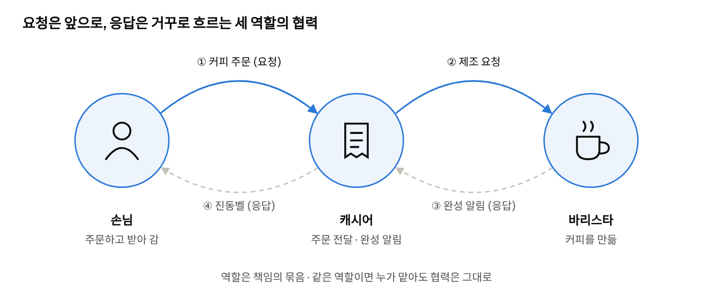
1장 한 장 그림 · 역할 3개, 요청 2개, 응답 2개
1장 전체를 한 장에 담은 그림임. 실선은 요청, 점선은 응답이며, 세 사람은 각자 맡은 책임만 수행함.
들어가며
이 절의 맥락 책 제목이 말하는 '오해' 가운데 첫 번째를 꺼내는 자리임. 많은 입문서가 '객체지향은 현실 세계를 그대로 옮기는 것'이라고 설명하는데, 저자는 그 설명이 이해에는 도움이 되지만 설계 원리로는 틀렸다고 말함.
요지 실세계 비유는 설계의 원리가 아니라, 개념을 이해하도록 돕는 도구임.
이름과 기능은 멀어도 됨. 저자는 방화벽을 예로 듦. 네트워크 방화벽은 건물의 방화벽에서 이름을 빌려 왔지만, 막는 대상은 불이 아니라 외부 침입임. 이름과 기능 사이가 이만큼 멀어도 아무 문제가 없고, 오히려 이름 덕분에 무슨 일을 하는지 바로 짐작할 수 있음. 쿠키, 스레드, 파이프라인, 힙 같은 용어도 같은 방식으로 이름만 빌려 왔음.
저자는 소프트웨어 객체와 현실 사물의 관계도 이 정도로 느슨하다고 봄. 그래서 객체지향의 목표는 현실을 모방하는 것이 아니라 새로운 세계를 창조하는 것이고, 개발자의 일은 고객과 사용자의 요구를 만족하는 그 세계를 짓는 것임. Eiffel 언어를 설계한 버트런드 마이어는 소프트웨어가 다루는 실재를 기껏해야 '먼 친척'이라고 표현했음.
그런데도 비유를 계속 쓰는 이유가 있음. 현실 비유는 객체지향을 처음 배울 때 매우 효과적임. 스스로 생각하고 결정하는 생명체에 빗대면 자율성과 캡슐화가 쉽게 이해되고, 약속과 계약으로 협력하는 사람들에 빗대면 메시지와 협력이 쉽게 이해됨.
또 현실의 개념에서 출발해 구현까지 같은 이름이 이어지는 것도 장점임. 업무에서 말하는 '주문'이 설계 문서에서도 '주문'이고, 코드에서도 Order라면, 어느 단계에서 읽어도 같은 뜻으로 통함. 이처럼 분석에서 찾은 개념이 설계와 구현까지 같은 이름과 의미로 이어지는 성질을 연결완전성(seamlessness)이라고 함.
1장을 읽는 방법 저자는 이 장에 한해서는 '현실 모방' 관점을 일부러 빌려 쓴다고 밝힘. 그래서 뒤에 나오는 커피 전문점 이야기는 설계 지침이 아니라, 역할, 책임, 협력이라는 개념을 이해하기 위한 수단으로 읽어야 함.
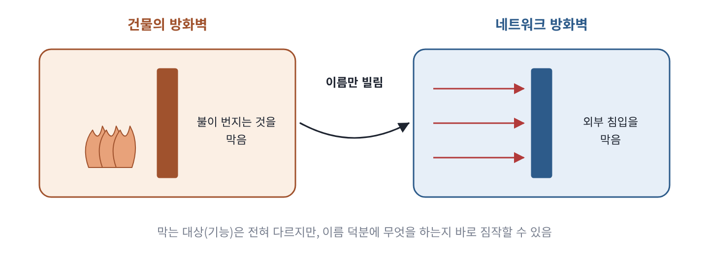
이름은 현실에서 빌렸지만 하는 일은 전혀 다름. 소프트웨어 객체와 현실 사물의 관계도 이 정도로 느슨함
보충 · 실제 사례와 코드
하나의 '실세계'는 존재하지 않음 같은 대상도 보는 사람의 목적에 따라 다르게 보임. 쇼핑몰의 '상품'을 예로 들면, 판매 부서는 가격, 할인율, 재고를 보고, 물류 부서는 무게, 부피, 출고 창고를 보며, 회계 부서는 원가, 세율, 매출 시점을 봄. 옮겨야 할 하나의 실세계가 없으므로 '실세계를 그대로 옮긴다'는 말은 성립하기 어려움.
이 관찰은 설계에 바로 영향을 줌. 하나의 클래스에 모든 관점을 담으면, 판매 로직을 고칠 때 물류와 회계 코드까지 영향을 받고 필드가 수십 개인 비대한 클래스가 됨. 그래서 맥락마다 모델을 따로 둠. 도메인 주도 설계(Domain-Driven Design, DDD)에서는 이 맥락의 경계를 바운디드 컨텍스트(Bounded Context)라고 부름.
아래 코드에서 볼 것은 같은 '상품'이 두 클래스로 나뉘었고, 각 클래스에는 자기 맥락에 필요한 필드만 있다는 점임.
// 판매 컨텍스트: 가격과 할인에 관심을 둠
class SaleProduct {
Money price; // ① 판매에 필요한 것만
DiscountPolicy discountPolicy;
int stock;
}
// 물류 컨텍스트: 무게와 부피에 관심을 둠
class ShippingItem {
Weight weight; // ② 물류에 필요한 것만
Volume volume;
Warehouse origin;
}
그래서 할인 규칙이 바뀌어도 ShippingItem은 전혀 영향을 받지 않음. 시스템의 목적이 모델의 범위를 정한 것임.
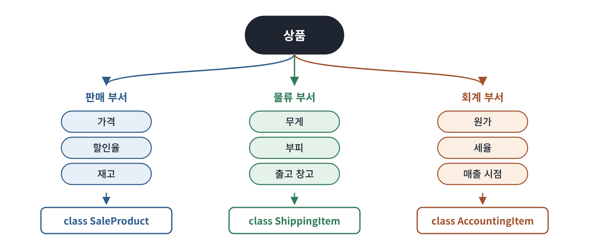
같은 상품도 부서마다 중요하게 보는 속성이 다름. 옮겨야 할 하나의 실세계가 없으므로 맥락마다 모델을 따로 둠
소프트웨어 객체는 현실 사물보다 능동적임 현실의 문서는 스스로 저장되지 않고, 현실의 주문서는 스스로 합계를 내지 않음. 그런데 코드에서는 document.save(), order.calculateTotal()처럼 사물이 스스로 일을 함. 아래 두 줄에서 볼 것은 '전등을 켠다'는 같은 일을 누가 하느냐임.
lightManager.turnOn(light); // ① 현실 관점: 바깥의 관리자가 전등을 조작함
light.turnOn(); // ② 객체지향 관점: 전등이 스스로 켜짐
①에서는 관리자가 전등을 켬. 전등이 켜질 수 있는지 판단하는 규칙(전원이 연결되어 있는가, 이미 켜져 있는가)은 관리자 쪽에 있어야 함.
②에서는 전등이 스스로 켜짐. 그 규칙이 전등 객체 안에 모이므로, 규칙이 바뀌어도 고칠 곳은 전등 한 곳뿐임.
객체에 현실 사물에는 없는 능력을 주는 것은 왜곡이 아니라, 책임을 알맞은 곳에 두기 위한 설계 선택임. 저자는 이 성질을 2장에서 '의인화'로 다시 다룸.
현실 모방의 부작용: 빈약한 도메인 모델 요구사항 문서의 명사를 그대로 클래스로 만들면 흔히 데이터만 든 클래스와 판단을 모두 떠안은 서비스 클래스로 나뉨. 아래 두 코드에서 볼 것은 할인 규칙이 어디에 있느냐임.
class Order { // ① 데이터만 보관함
List<Item> items;
int discount;
}
class OrderService { // ② 판단과 계산이 모두 여기에 몰림
int calculateTotal(Order order) { ... }
void applyDiscount(Order order) { ... }
}
①의 Order는 항목과 할인 값을 담고만 있음. 누구나 order.discount = -100처럼 잘못된 값을 넣을 수 있음.
게다가 Order만 보아서는 주문이 무엇을 할 수 있는지 알 수 없음. 행동이 다른 곳에 흩어져 있기 때문임.
책임을 데이터를 가진 쪽으로 옮기면 다음과 같음.
class Order {
private final List<Item> items;
private Discount discount;
public Money calculateTotal() { // ① 주문이 스스로 합계를 냄
return discount.applyTo(sumOfItems());
}
public void applyDiscount(Discount discount) {
if (!discount.isApplicableTo(this)) { // ② 적용할 수 있는지 스스로 확인함
throw new IllegalArgumentException("적용할 수 없는 할인입니다");
}
this.discount = discount; // ③ 확인한 뒤에만 상태를 바꿈
}
}
①에서 합계 계산이 주문 안으로 들어옴. 계산에 필요한 항목과 할인을 주문이 가지고 있기 때문임.
②에서 할인을 적용해도 되는지 주문이 스스로 판단함. 규칙이 이 한 곳에만 있음.
③에서 확인을 통과한 경우에만 상태가 바뀌므로, 바깥에서 잘못된 상태를 만들 길이 없음.
다만 모든 로직을 도메인 객체에 넣으라는 뜻은 아님. 여러 객체를 조율하는 일, 트랜잭션, 외부 시스템 호출은 서비스 계층이 맡음. 핵심은 특정 데이터에 관한 판단을 그 데이터를 가진 객체에 두는 것임. 이 문제는 2장 논쟁 ①에서 다시 다룸.
연결완전성이 깨질 때의 비용 같은 개념이 기획 문서에서는 '주문', 데이터베이스에서는 TB_ORD_MST, 코드에서는 PurchaseRequestDto로 불린다고 하자. '주문 취소 로직을 바꿔 달라'는 요청을 받으면 개발자는 세 이름 사이를 머릿속에서 번역해야 하고, 번역이 반복될수록 오해가 끼어듦.
흔한 원인은 데이터베이스나 예전 시스템의 이름이 코드에 그대로 들어오거나, Manager, Processor, Data처럼 뜻이 흐린 이름을 쓰거나, 같은 개념을 팀마다 다르게 부르는 것임. 그래서 업무 담당자와 용어집을 만들어 클래스와 메서드 이름을 맞추고, 데이터베이스나 외부 API의 이름은 저장소(리포지토리)나 어댑터 같은 경계에서 바꿔 줌. 좋은 점검 방법은 회의에서 나온 문장이 코드로 그대로 읽히는지 보는 것임. '주문이 결제되면 재고를 줄인다'가 order.pay(), inventory.decrease(order)로 읽힌다면 연결완전성이 지켜진 것임.
한 줄 정리 실세계 비유는 이해를 돕는 학습 도구이고, 객체를 나누는 실제 기준은 현실과 닮았는가가 아니라 협력 안에서 맡는 책임임.
논의해 보기
Q. 실세계 비유가 오히려 설계를 망친 경우를 떠올려 보자. 예를 들어 '현실의 계좌는 스스로 이체하지 않는다'는 이유로 이체 로직을 밖으로 빼 버린 경우는 어떤가?
답 보기
현실을 기준으로 삼으면 계좌는 데이터만 든 상자가 되고, 이체 규칙은 서비스 클래스에 흩어짐.
현실의 계좌는 은행원이 다루는 장부일 뿐이므로, 그대로 옮기면 TransferService가 잔액을 꺼내 확인하고 직접 빼고 더하게 됨. 이체하는 화면이 늘어날 때마다 같은 확인 코드가 복사되고, 한 곳에서 '하루 이체 한도' 확인을 빠뜨리면 그 길로 한도를 넘는 이체가 일어남.
소프트웨어의 계좌는 잔액과 한도를 가장 잘 아는 객체임. 그래서 account.withdraw(amount)처럼 계좌가 스스로 이체 가능 여부를 판단하게 하는 편이 낫고, 규칙도 한 곳에 모임.
이것이 2장의 '의인화'임. 현실에서 수동적인 사물에게 소프트웨어에서는 스스로 판단할 능력을 주는 것이 객체지향의 실제 모습이라는 것임.
1.1 협력하는 사람들
이 절의 맥락 용어를 정의하기 전에 누구나 겪어 본 일, 커피 주문을 먼저 보여 줌. 손님, 캐시어, 바리스타가 각자 맡은 일을 하며 서로에게 부탁하는 모습에서 1장의 세 단어(역할, 책임, 협력)가 모두 나옴. 이 절의 이야기는 1.2에서 그대로 객체의 언어로 옮겨짐.
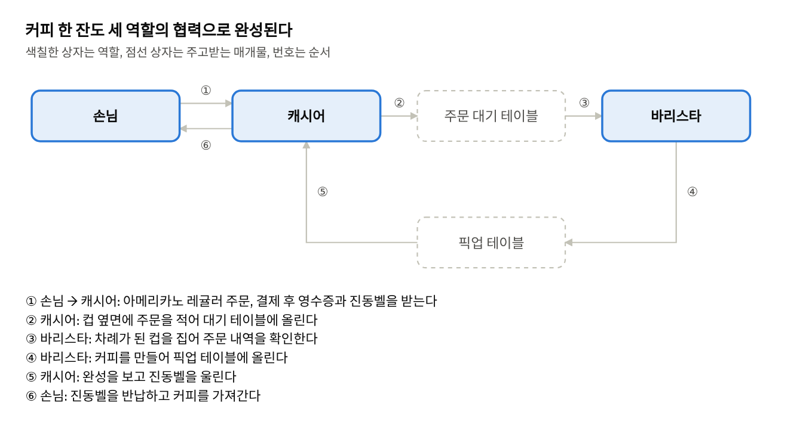
손님과 바리스타는 직접 소통하지 않음. 캐시어가 둘을 이어 주며, 요청은 오른쪽으로 흐르고 응답은 같은 길을 거꾸로 돌아옴
1.1 협력하는 사람들
1.1.1 커피 공화국의 아침
요지 커피 한 잔을 주문하는 일상적인 일도 역할, 책임, 협력이 맞물려야 완성됨.
커피 전문점에는 세 사람이 있음. 손님은 커피를 주문하고 준비된 커피를 받음. 캐시어는 주문을 받아 바리스타에게 전달하고, 커피가 준비되면 손님에게 알림. 바리스타는 주문된 커피를 만듦. 손님은 캐시어와, 캐시어는 손님과 바리스타 둘 다와, 바리스타는 캐시어와 협력함.
손님은 바리스타와 직접 이야기하지 않음. 각 참여자는 자기 책임만 수행하고, 나머지는 상대가 책임을 다할 것이라고 믿음. 손님은 원두를 어떻게 가는지 몰라도 되고, 바리스타는 손님이 누구인지 몰라도 됨. 이렇게 서로 모르는 것이 많기 때문에 오히려 협력이 단순해짐.
세 개념은 어디에나 있음. 역할, 책임, 협력은 정비소, 식당, 소프트웨어 개발 프로젝트처럼 사람이 관계를 맺는 모든 곳에 있음. 그래서 독자는 이미 객체지향의 핵심 개념 세 가지를 경험으로 알고 있다는 것이 저자의 설명임.
역할은 협력이 끝나면 함께 끝남. 커피를 받아 자리로 돌아가면 '손님'이라는 역할은 끝남. 같은 사람이 카페에서는 손님이고, 회사에서는 개발자임. 역할은 사람에게 붙은 고정된 속성이 아니라 협력에 속하는 것임. 이 생각은 4장의 '역할'과 '대체 가능성'으로 이어짐.
협력도 시작과 끝이 있음. 주문으로 시작해 커피를 받는 순간 끝남. 소프트웨어에서도 '주문하기', '결제하기'처럼 기능마다 별도의 협력이 있음. 이 책이 뒤에서 '객체보다 협력을 먼저 설계하라'고 주장하는 근거가 여기에 있음(4장, 7장).
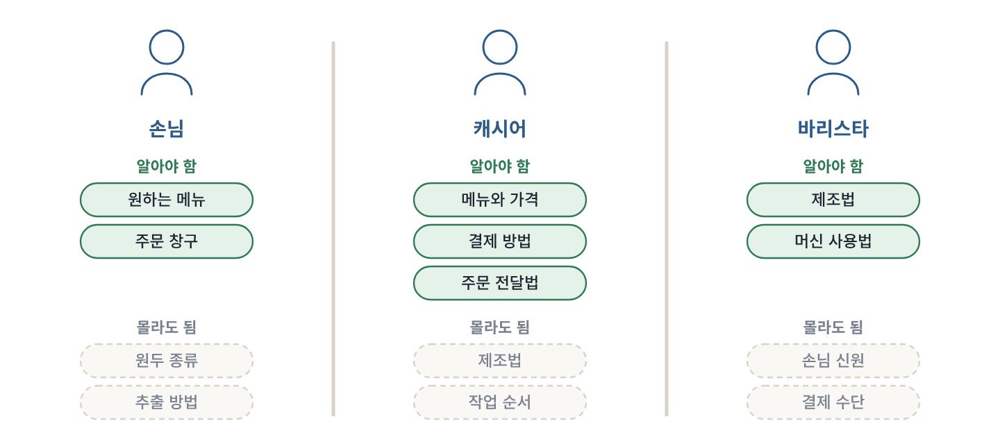
각 역할은 자기 책임에 필요한 것만 앎. 몰라도 되는 것이 많을수록 한쪽이 바뀌어도 다른 쪽이 흔들리지 않음(낮은 결합도)
보충 · 실제 사례와 코드
커피 전문점을 예로 고른 이유 대부분의 독자가 직접 겪어 본 상황이고, 세 역할이 서 있는 위치, 쓰는 말, 다루는 도구로 겉보기에도 분명히 구분됨. 요청, 처리, 통지, 수령이 모두 들어 있어서 이후 장에서도 계속 쓰이고, 7장에서는 실제 코드로 구현됨.
몰라도 되는 것이 많을수록 좋음: 결합도와 응집도 바리스타가 머신을 바꾸거나 제조법을 개선해도 손님과 캐시어는 바뀔 것이 없음. 서로 몰라도 되는 것이 많기 때문임. 한 요소가 다른 요소에 대해 아는 정도를 결합도(coupling)라고 하고, 높을수록 상대의 변경이 나에게 번짐. 관련된 책임이 한 요소 안에 모인 정도를 응집도(cohesion)라고 하고, 제조 지식이 모두 바리스타에게 있으면 응집도가 높음. 좋은 설계는 낮은 결합도와 높은 응집도를 지향함.
아래 두 캐시어에서 볼 것은 캐시어가 바리스타의 '작업 절차'를 아느냐, '원하는 결과'만 아느냐임.
// 결합도가 높은 구조: 캐시어가 바리스타의 작업 절차를 지시함
class Cashier {
void takeOrder(String menu) {
barista.grindBeans(); // ① 원두 갈기
barista.extractEspresso(2); // ② 샷 추출
barista.addWater(200); // ③ 물 붓기
}
}
// 결합도가 낮은 구조: 캐시어는 필요한 결과만 요청함
class Cashier {
void takeOrder(String menu) {
barista.makeCoffee(menu); // ④ 커피를 만들어 달라
}
}
①~③에서 캐시어는 커피 만드는 순서를 모두 알고 있음. 바리스타가 새 머신으로 방법을 바꾸면 캐시어 코드도 함께 고쳐야 함.
④에서 캐시어는 '커피를 만들어 달라'는 결과만 요청함. 만드는 방법이 바뀌어도 캐시어는 그대로임.
두 번째 구조에서는 제조 지식이 모두 바리스타 안에 모였으므로 응집도도 높아짐.
요청을 적어 두기: 주문이 적힌 컵과 대기열 주문을 말로만 전하면 바리스타가 바쁠 때 주문이 빠질 수 있음. 컵에 적어 두면 주문이 없어지지 않고, 들어온 순서도 지켜짐. 소프트웨어에서 이 컵에 해당하는 것이 메시지 큐(Kafka, Amazon SQS), 작업 대기열, 이벤트 로그임.
대기열을 두면 캐시어는 컵에 적고 바로 다음 손님을 받을 수 있고, 바리스타가 잠시 자리를 비워도 주문이 보존되며, 바리스타를 늘려도 캐시어는 바뀔 것이 없음. 대신 구성 요소가 늘고 순서와 중복 처리를 관리해야 함. 손님이 적은 시간에는 말로 전하는 쪽이 더 빠르고 간단함. 설계는 언제나 상황에 따른 선택(trade-off)임.
완료 알리기: 진동벨과 비동기 처리 손님은 창구 앞에서 기다리지 않고 진동벨로 완료 알림을 받음. 이는 코드에서 콜백(callback)이나 Future를 쓰는 비동기 처리와 같은 구조임. 아래 코드에서 볼 것은 손님이 커피를 기다리는 동안 다른 일을 할 수 있느냐임.
// 동기 방식: 커피가 나올 때까지 손님은 다른 일을 할 수 없음
Coffee coffee = cashier.takeOrder("아메리카노"); // ① 여기서 멈춰 기다림
drink(coffee);
// 비동기 방식: 진동벨을 받고 다른 일을 함
CompletableFuture<Coffee> buzzer = cashier.takeOrderAsync("아메리카노"); // ② 진동벨을 받음
readNews(); // ③ 기다리지 않고 다른 일
buzzer.thenAccept(this::drink); // ④ 커피가 준비되면 실행됨
①의 takeOrder는 커피가 완성되어 돌아올 때까지 다음 줄로 넘어가지 않음.
②의 takeOrderAsync는 커피 대신 진동벨(CompletableFuture)을 바로 돌려줌.
③에서 손님은 기다리지 않고 뉴스를 읽음.
④는 '벨이 울리면 마신다'는 약속을 걸어 둔 것임. 실제 실행은 커피가 준비된 뒤에 일어남.
비동기는 요청한 쪽의 시간을 아껴 주지만, 결과가 언제 올지 몰라 흐름을 따라가기 어렵고, 벨이 울리지 않는 실패(처리 실패)에도 대비해야 함. 그래서 타임아웃과 재시도 정책을 함께 정함.
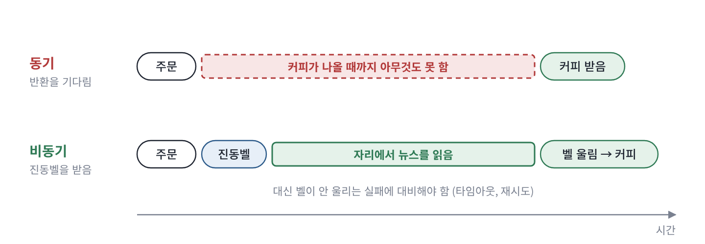
동기 방식은 응답이 올 때까지 기다리고, 비동기 방식은 진동벨을 받고 다른 일을 하다가 통지를 받음
역할이 나뉘지 않으면: 갓 오브젝트 작은 카페에서는 한 사람이 주문, 제조, 제공을 모두 맡기도 함. 손님이 적을 때는 단순하고 효율적이지만, 손님이 늘면 그 한 사람이 병목이 되고, 메뉴나 결제 방식이 바뀔 때마다 그 사람의 일 전체를 다시 조정해야 함.
코드에서 이렇게 지나치게 많은 책임을 가진 클래스를 갓 오브젝트(God Object)라고 부름. 이름이 Manager, Handler, Util처럼 무엇이든 담을 수 있거나, 고쳐야 하는 이유가 여러 가지이거나, 같은 클래스의 메서드들이 서로 다른 필드만 쓰거나, 테스트하려면 준비할 객체가 지나치게 많다면 역할을 나눌 때가 된 것임. 고쳐야 하는 이유가 하나여야 한다는 원칙을 단일 책임 원칙(Single Responsibility Principle, SRP)이라고 함. 캐시어와 바리스타를 나눈 이유도 같음. 결제 방식이 바뀌는 이유와 제조법이 바뀌는 이유는 서로 다름.
역할과 역할을 맡은 사람을 코드로 나누기 아래 코드에서 볼 것은 역할(interface)과 그 역할을 맡은 대상(class)이 따로 있다는 점임.
interface Cashier { // ① 역할: 해야 할 책임만 정의함
Coffee takeOrder(String menu);
}
interface Barista {
Coffee makeCoffee(String menu);
}
class PartTimer implements Cashier, Barista { // ② 두 역할을 함께 맡은 아르바이트생
public Coffee takeOrder(String menu) { ... }
public Coffee makeCoffee(String menu) { ... }
}
class FakeCashier implements Cashier { // ③ 테스트용 대역
public Coffee takeOrder(String menu) { return new Coffee(menu); }
}
①의 Cashier와 Barista는 역할임. '무엇을 해야 하는지'만 적고 '어떻게'는 적지 않음.
②의 PartTimer는 두 역할을 함께 맡음. 사람은 하나지만 역할은 여전히 둘임.
③의 FakeCashier는 테스트에서 진짜 캐시어 대신 쓰는 대역임.
손님 코드는 Cashier 역할에만 기대므로, 정규 직원, 아르바이트생, 무인 주문기, 테스트용 대역 중 무엇을 넣어도 바뀌지 않음.
다만 interface를 만드는 것 자체가 목적은 아님. 저자가 강조하는 것은 '이 협력에 필요한 것은 특정한 사람이 아니라 특정한 책임'이라고 생각하는 방식임. 이 내용은 4장에서 자세히 다룸.
한 줄 정리 커피 주문은 세 역할의 협력이고, 각자는 자기 책임만 수행하며 상대의 내부 사정은 몰라도 됨. 역할은 사람이 아니라 협력에 속함.
1.1 협력하는 사람들
1.1.2 요청과 응답으로 구성된 협력
요지 협력은 요청과 응답의 연쇄이며, 응답은 요청과 반대 방향으로 돌아옴.
왜 요청을 하는가? 일상의 문제는 대부분 혼자 풀기에는 복잡함. 그래서 사람들은 필요한 지식이나 서비스를 가진 사람에게 도움을 청함. 이것이 요청(request)임.
요청은 다른 요청을 낳음. 하나의 문제를 풀려면 여러 역할이 필요하므로, 한 요청이 다른 요청을 불러옴. 손님은 캐시어에게 커피를 달라고 요청하고, 캐시어는 그 요청을 처리하려고 주문이 적힌 컵을 바리스타에게 건네며 제조를 요청함.
응답은 거꾸로 돌아옴. 요청을 받은 사람은 자기 책임을 수행해 지식이나 서비스를 돌려줌. 이것이 응답(response)임. 바리스타는 캐시어에게 제조가 끝났다고 알리고, 캐시어는 진동벨을 울려 손님에게 알림. 요청이 손님에서 바리스타 쪽으로 흘렀다면, 응답은 바리스타에서 손님 쪽으로 같은 길을 거꾸로 돌아옴.
협력은 성실함에 달려 있음. 요청과 응답으로 협력하는 능력 덕분에 사람은 공동체를 이루어 크고 복잡한 문제를 풀 수 있음. 그리고 협력이 성공하느냐는 각 역할을 맡은 사람이 받은 요청을 얼마나 성실히 이행하느냐에 달려 있음.
그래서 1장의 제목이 '협력하는 객체들의 공동체'임. 객체 하나하나는 대개 단순한 책임만 가짐. 그러나 객체들이 요청과 응답으로 협력하면, 어느 한 객체도 혼자서는 할 수 없는 기능이 만들어짐. 객체지향 프로그램은 정교한 객체를 모아 놓은 것이 아니라 협력하는 객체들의 공동체로 보아야 한다는 뜻임.
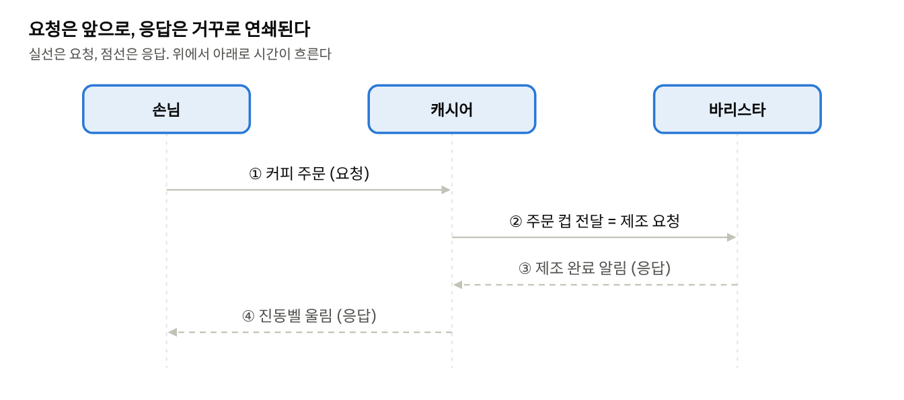
요청은 손님에서 바리스타 방향으로 전파되고, 응답은 그 반대 순서로 돌아옴
보충 · 실제 사례와 코드
요청과 응답은 코드에서 호출과 반환임 아래 코드에서 볼 것은 요청이 어떻게 이어지고, 응답이 어떤 순서로 돌아오는가임.
class Customer {
void order(Cashier cashier) {
Coffee coffee = cashier.takeOrder("아메리카노"); // ① 요청을 보내고 응답을 받음
}
}
class Cashier {
private final Barista barista = new Barista();
Coffee takeOrder(String menu) {
return barista.makeCoffee(menu); // ② 요청을 이어 보내고, 받은 응답을 돌려줌
}
}
class Barista {
Coffee makeCoffee(String menu) {
return new Coffee(menu); // ③ 만드는 방법은 바리스타만 앎
}
}
①에서 손님이 캐시어에게 요청을 보냄. 응답(Coffee)이 올 때까지 이 줄에서 기다림.
②에서 캐시어는 받은 요청을 처리하려고 바리스타에게 새 요청을 보냄. 요청이 연쇄되는 지점임.
③에서 바리스타가 커피를 만들어 돌려줌. 이 응답이 ②로 돌아가고, ②가 다시 ①로 돌려줌.
호출은 order → takeOrder → makeCoffee 순서로 콜 스택에 쌓이고, 반환은 makeCoffee → takeOrder → order 순서로 풀림. 두 순서가 정확히 반대인 이유는 스택이 마지막에 넣은 것을 먼저 꺼내는 후입선출(LIFO) 구조이기 때문임.
예외도 같은 길로 전해짐. 원두가 떨어져 바리스타가 예외를 던지면 캐시어를 거쳐 손님에게 감. 이때 캐시어가 예외를 받아 다른 메뉴를 권한다면, 손님은 안쪽 사정을 모른 채 대신 마련된 응답을 받음. 누가 어떤 실패를 책임질지도 협력 설계의 일부임. HTTP 요청과 응답, 마이크로서비스의 연쇄 호출(A → B → C)도 같은 구조임.
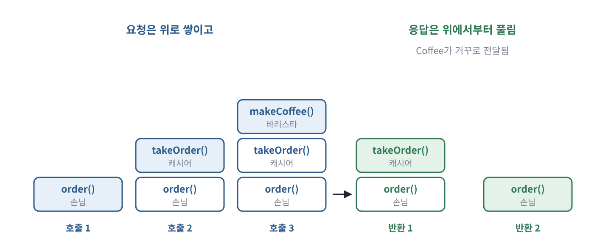
요청은 콜 스택에 손님 → 캐시어 → 바리스타 순으로 쌓이고, 응답은 그 반대 순서로 풀림(후입선출)
요청하는 쪽은 '무엇'만 알면 됨 손님이 아는 것은 '무엇을 원하는가'와 '누구에게 요청하는가'뿐임. "아메리카노 한 잔 주세요"는 원하는 결과(무엇)를 말한 요청임. "원두 18그램을 곱게 갈아 9기압으로 25초 추출한 뒤 물 200밀리리터를 부어 주세요"는 수행 절차(어떻게)를 지시한 요청임. 두 번째 방식에서는 바리스타가 더 나은 방법을 쓸 수 없고, 손님은 자기 책임이 아닌 지식까지 갖춰야 함. 이 문제는 5장의 "'어떻게'가 아니라 '무엇'을"에서 다시 다룸.
요청이 책임을 낳음: 책임 주도 설계의 순서 요청은 상대의 책임을 움직이게 하는 계기이고, 응답은 그 책임을 수행한 결과임. 이 관계를 설계 순서로 옮기면 이러함. 먼저 시스템이 할 기능에서 출발해 필요한 요청을 찾음. 그 요청을 처리할 책임을 정의하고, 그 책임을 수행하기에 가장 알맞은 객체를 고름. 그 객체가 혼자 처리할 수 없는 부분이 있으면 새 요청을 정의하고 같은 과정을 되풀이함.
이것이 4장과 5장에서 다루는 책임 주도 설계(Responsibility-Driven Design)의 기본 흐름임. 객체를 먼저 정하지 않고 요청 → 책임 → 객체 순서로 정한다는 점이 핵심임.
응답의 두 가지 모양 응답은 결과물을 직접 돌려주는 방식(커피를 건넴, 반환값, 동기)과 완료만 알리는 방식(진동벨, 콜백이나 이벤트, 비동기)으로 나뉨. 처리 시간이 짧고 결과가 다음 단계에 바로 필요하면 동기가 맞고, 처리 시간이 길거나 결과 없이도 진행할 수 있으면 비동기가 맞음. 결제 승인처럼 결과를 확인해야 다음으로 넘어가는 일은 동기로, 주문 후 영수증 이메일 발송처럼 기다릴 필요가 없는 일은 비동기로 처리하는 식임.
바로 옆 상대만 알기: 디미터 법칙 아래 두 줄에서 볼 것은 손님이 누구까지 알고 있느냐임.
customer.getCashier().getBarista().makeCoffee("아메리카노"); // ① 캐시어를 거쳐 바리스타를 직접 조작함
cashier.takeOrder("아메리카노"); // ② 직접 협력하는 상대에게만 요청함
①에서 손님은 캐시어 안에 바리스타가 있다는 것까지 알고 직접 꺼내 씀. 카페가 바리스타 대신 자동 머신을 들이기만 해도 이 코드를 고쳐야 함.
②에서 손님은 캐시어만 앎. 캐시어 뒤에서 무슨 일이 일어나든 손님 코드는 그대로임.
디미터 법칙(Law of Demeter)은 메서드 안에서 객체 자신, 파라미터로 받은 객체, 메서드 안에서 만든 객체, 필드로 가진 객체에게만 메시지를 보내라고 말함. ①처럼 마침표로 길게 이어지는 호출을 '기차 충돌'(train wreck)이라고도 부름. 단, 마침표 개수 자체가 기준은 아님. list.stream().filter(...).map(...)이나 빌더 패턴은 위반으로 보지 않음. 핵심은 다른 객체의 내부 구조를 들여다보고 그 사정에 기대게 되느냐임. 5장의 '묻지 말고 시켜라'와 같은 생각임.
'성실한 이행'을 코드로 쓰면: 계약에 의한 설계 소프트웨어에서 요청을 성실히 이행한다는 것은 객체가 약속한 책임을 정확히 지킨다는 뜻임. 버트런드 마이어는 이를 계약에 의한 설계(Design by Contract)로 정리했음. 요청하는 쪽이 요청 전에 지켜야 할 사전 조건(메뉴에 있는 음료를 주문하고 결제함), 처리하는 쪽이 처리 뒤에 보장할 사후 조건(음료가 준비되면 반드시 알림), 처리 전후에 늘 지켜지는 불변식(결제되지 않은 주문은 제조 대기열에 오르지 않음)으로 이루어짐.
아래 코드에서 볼 것은 사전 조건과 사후 조건이 코드의 어느 줄에 있는가임.
class Cashier {
Receipt takeOrder(Menu menu, Payment payment) {
if (!menuBoard.contains(menu)) // ① 사전 조건: 파는 메뉴인가
throw new IllegalArgumentException("판매하지 않는 메뉴입니다");
if (!payment.isApproved()) // ② 사전 조건: 결제가 끝났는가
throw new IllegalStateException("결제가 완료되지 않았습니다");
Receipt receipt = orderQueue.add(menu); // ③ 책임 수행
assert orderQueue.contains(receipt); // ④ 사후 조건: 대기열에 올랐는가
return receipt;
}
}
①과 ②는 요청하는 쪽이 지켜야 할 조건을 확인함. 지켜지지 않으면 처리하지 않고 거절함.
③에서 실제 책임(주문을 대기열에 올림)을 수행함.
④는 처리한 뒤 약속대로 되었는지 확인함.
계약이 분명하면 각 참여자는 상대가 보장하는 것을 믿을 수 있고, 계약이 지켜지는 한 상대의 안쪽이 바뀌어도 협력은 유지됨. 이것이 다음 목의 대체 가능성과 바로 이어짐.
한 줄 정리 협력 = 요청과 응답의 연쇄. 요청은 책임을 차례로 깨우며 퍼지고, 응답은 반대 방향으로 돌아오며, 각자는 바로 옆 상대만 앎.
1.1 협력하는 사람들
1.1.3 역할과 책임
요지 역할은 책임을 담고 있으며, 여기서 대체 가능성, 자율성, 다형성이 나옴.
역할(role)은 협력에 참여하는 사람이 그 협력 안에서 맡는 자리임. 커피 주문 협력에는 손님, 캐시어, 바리스타라는 세 역할이 있음.
역할이라는 말에는 책임이 들어 있음. 선생님이라는 역할에는 학생을 가르칠 책임이 따르고, 범죄자를 잡을 책임을 거부하는 사람은 경찰관이 될 수 없음. 프로그래머라는 역할을 맡는다는 것은 좋은 프로그램을 만들 책임을 받아들인다는 뜻임. 그래서 역할은 단순한 이름이 아니라 그 이름에 붙은 책임의 묶음임.
커피 주문에서 손님의 책임은 커피를 주문하는 것, 바리스타의 책임은 커피를 만드는 것임. 캐시어는 주문을 바리스타에게 전달하는 책임과 커피가 준비되었다고 손님에게 알리는 책임, 이렇게 두 개를 가짐. 하나의 역할이 여러 책임을 묶고 있을 수 있다는 뜻임.
역할과 책임에서 네 가지 성질이 나옴.
첫째, 여러 사람이 같은 역할을 맡을 수 있음. 손님은 주문한 커피만 받을 수 있다면 어떤 캐시어가 주문을 받든 상관하지 않음. 캐시어가 그만두면 같은 책임을 수행할 수 있는 다른 사람을 뽑으면 됨.
둘째, 역할은 대체 가능성을 뜻함. 두 사람이 같은 역할을 할 수 있다면, 요청하는 쪽에서는 누가 하든 문제가 없음. 이를 대체 가능성(substitutability)이라고 함. 요청하는 쪽이 기대는 것은 사람이 아니라 역할이기 때문임.
셋째, 책임을 수행하는 방법은 스스로 고를 수 있음. 요청을 받은 사람은 처리 방법을 스스로 정함. 어떤 바리스타는 라테 아트를 그리고, 어떤 바리스타는 향을 더 살림. 이처럼 같은 요청에 서로 다른 방식으로 응답하는 능력을 다형성(polymorphism)이라고 함.
넷째, 한 사람이 여러 역할을 동시에 맡을 수 있음. 한 사람이 캐시어와 바리스타를 함께 할 수 있음. 현실에서도 사람은 회사의 직원이면서 가정의 부모이고 배우자임.
세 번째 성질은 앞의 내용과 이어짐. 요청이 '무엇'만 말하고 '어떻게'를 맡기기 때문에(1.1.2 보충), 받는 쪽이 방법을 스스로 고를 수 있고, 그래서 같은 요청에 다른 응답이 가능해짐. 손님이 추출 시간과 물의 양까지 지시한다면 모든 바리스타가 똑같이 움직여야 하므로 다형성은 생기지 않음.
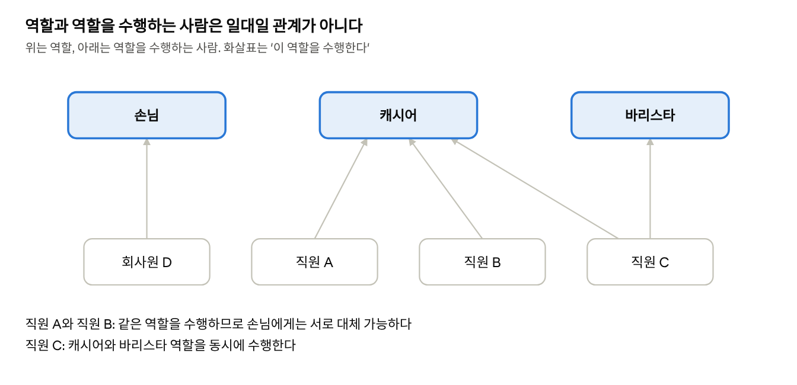
역할과 그 역할을 맡은 사람은 일대일로 대응하지 않음. 여러 사람이 한 역할을 맡을 수 있고, 한 사람이 여러 역할을 맡을 수도 있음
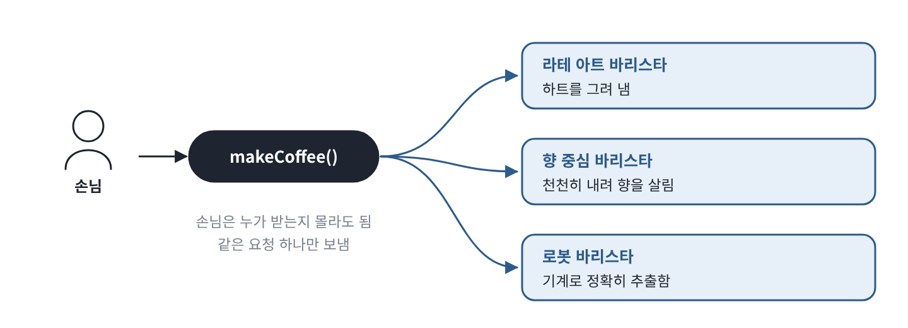
다형성: 같은 요청을 받아도 받는 쪽마다 자기 방식으로 응답함. 요청하는 쪽은 그 차이를 몰라도 됨
보충 · 실제 사례와 코드
대체 가능성을 코드로 보기: 리스코프 치환 원칙 아래 코드에서 볼 것은 손님이 어떤 캐시어를 받든 손님 코드가 바뀌지 않는다는 점임.
interface Cashier { Buzzer takeOrder(Menu menu); } // ① 역할
class StaffCashier implements Cashier { ... } // ② 직원이 주문을 받음
class Kiosk implements Cashier { ... } // ② 무인 주문기가 주문을 받음
class Customer {
private final Cashier cashier; // ③ 역할에만 기댐
Customer(Cashier cashier) { this.cashier = cashier; }
void orderCoffee() { Buzzer buzzer = cashier.takeOrder(Menu.AMERICANO); }
}
new Customer(new StaffCashier()); // ④ 어느 쪽을 넣어도
new Customer(new Kiosk()); // Customer 코드는 그대로
①의 Cashier는 '주문을 받고 진동벨을 준다'는 역할임.
②의 두 클래스는 그 역할을 각자의 방식으로 맡음.
③에서 손님은 구체적인 클래스가 아니라 역할에만 기댐.
④에서 어느 쪽을 넣어도 손님은 똑같이 주문함. 이것이 대체 가능성임.
그런데 대체 가능성은 '같은 이름의 메서드가 있다'는 것만으로 생기지 않음. 무인 주문기가 주문은 받되 진동벨을 울리지 않는다면, 형식상 Cashier를 구현했어도 캐시어를 대신할 수 없음. 대신하는 쪽은 요청하는 쪽이 기대하는 책임, 즉 1.1.2 보충에서 본 계약을 그대로 지켜야 함. 이 원칙을 리스코프 치환 원칙(Liskov Substitution Principle)이라고 하며, 객체지향 설계 원칙 SOLID의 L에 해당함. 3장에서 '행위적 호환성'이라는 이름으로 다시 나옴.
다형성이 없으면 생기는 일: 개방-폐쇄 원칙 아래 두 코드에서 볼 것은 요청하는 쪽이 상대의 종류를 따져야 하느냐임.
// 다형성이 없는 경우: 요청하는 쪽이 상대의 종류를 판별함
if (barista instanceof LatteArtBarista) { // ① 라테 아트 바리스타면
((LatteArtBarista) barista).makeWithLatteArt(menu);
} else if (barista instanceof AromaBarista) { // ② 향 중심 바리스타면
((AromaBarista) barista).makeWithRichAroma(menu);
}
// 다형성을 쓴 경우: 요청하는 쪽은 같은 요청만 보냄
barista.makeCoffee(menu); // ③ 처리 방식은 받는 쪽이 정함
①과 ②에서 요청하는 쪽이 바리스타 종류를 하나하나 확인하고 각각 다른 메서드를 부름. 새 바리스타가 생기면 이 if문에 줄을 더해야 함.
③에서는 같은 요청 하나만 보냄. 새 바리스타가 생겨도 이 줄은 바뀌지 않음.
기존 코드를 고치지 않고 새 동작을 더할 수 있는 성질을 개방-폐쇄 원칙(Open-Closed Principle)이라고 하며, 다형성은 이를 가능하게 하는 핵심 수단임.
한 객체가 여러 역할을 맡을 때: 인터페이스 분리 원칙 아래 코드에서 볼 것은 같은 kim이 상대에 따라 다른 역할로만 보인다는 점임.
class PartTimer implements Cashier, Barista { ... }
PartTimer kim = new PartTimer();
Customer customer = new Customer(kim); // ① 손님에게 kim은 캐시어일 뿐임
Kitchen kitchen = new Kitchen(kim); // ② 주방에게 kim은 바리스타일 뿐임
①에서 손님은 Cashier 역할로만 kim을 앎. 김 씨가 커피를 만들 줄 안다는 것은 몰라도 됨.
②에서 주방은 Barista 역할로만 앎. 김 씨가 주문을 받을 줄 안다는 것은 몰라도 됨.
협력 상대가 쓰지 않는 기능에 기대지 않도록 역할을 작게 나누는 원칙을 인터페이스 분리 원칙(Interface Segregation Principle)이라고 함.
다형성의 여러 모양 다형성에는 몇 가지 모양이 있음. 같은 역할을 맡은 여러 객체가 같은 메시지에 다르게 응답하는 서브타입 다형성(Barista의 여러 구현), 같은 이름의 메서드가 파라미터에 따라 다르게 동작하는 오버로딩(print(int), print(String)), 하나의 코드가 여러 타입에 대해 동작하는 매개변수 다형성(List<Coffee>, List<Tea>)임. 이 책에서 말하는 다형성은 첫 번째임. 메시지를 받는 객체가 실행 시점에 처리 방법을 정하므로, 요청하는 쪽과 처리하는 쪽 사이의 결합도를 낮춤.
한 줄 정리 역할 = 책임의 묶음. 요청하는 쪽은 사람이 아니라 역할에 기대므로 서로 바꿔 끼울 수 있고(대체 가능성), 같은 요청에 각자 다르게 응답할 수 있음(다형성).
논의해 보기
Q1. 1인 카페에서 한 사람이 캐시어와 바리스타를 모두 맡는다면, 역할은 하나로 합쳐진 것일까?
답 보기
아님. 사람은 하나지만 역할은 여전히 둘임.
역할은 사람이 아니라 협력에 속함. 손님과의 협력에서 그 사람은 주문을 받는 캐시어이고, 주방에서는 커피를 만드는 바리스타임. 위의 PartTimer가 Cashier와 Barista를 함께 구현한 것과 같은 모습임.
역할과 그 역할을 맡은 사람을 구분해 두면 좋은 점이 있음. 가게가 커져서 캐시어를 따로 뽑아도 손님 입장에서는 바뀌는 것이 없음. 손님은 처음부터 '캐시어 역할'과만 협력했기 때문임. 반대로 둘을 하나의 '사장님' 역할로 합쳐 버렸다면, 사람을 나누는 순간 손님이 누구에게 주문해야 하는지부터 다시 정해야 함.
이것이 4장에서 말하는 '역할은 대체 가능성의 단위'라는 생각의 출발점임.
Q2. 요청한 쪽이 응답을 기다리지 않아도 되는 협력(진동벨)은 코드에서 무엇과 닮았을까?
답 보기
콜백, 이벤트, 비동기 메시지 큐가 같은 구조임.
진동벨 협력에서도 응답의 방향은 같음. 바리스타 → 캐시어 → 손님으로 돌아옴. 달라진 것은 기다리는 방식임. 손님은 창구 앞에서 멈춰 서 있지 않고, '벨이 울리면 받으러 간다'는 약속만 걸어 두고 다른 일을 함.
코드에서는 CompletableFuture에 thenAccept로 할 일을 걸어 두는 것, 버튼에 클릭 이벤트 처리 함수를 등록하는 것, 메시지 큐에 작업을 넣고 처리 결과를 이벤트로 받는 것이 모두 같은 모양임.
대가도 같음. 벨이 안 울리는 경우(처리 실패)에 대비해야 하고, 일이 언제 끝날지 몰라 흐름을 따라가기 어려움. 그래서 비동기는 기다리는 시간이 길거나, 결과 없이도 진행할 수 있을 때 고르는 것이 좋음.
1.2 역할, 책임, 협력
이 절의 맥락 1.1의 커피 이야기를 객체지향 용어로 옮기는 절임. 사람을 객체로, 부탁을 메시지로, 할 일을 책임으로 바꾸어 읽으면 같은 이야기가 그대로 설계 이야기가 됨.
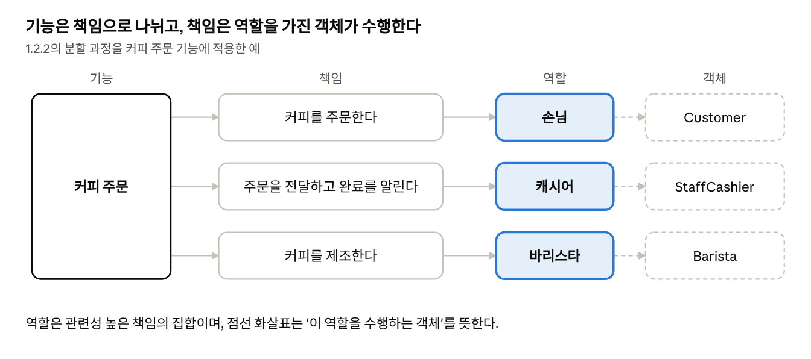
커피 주문이라는 기능은 세 개의 책임으로 나뉘고, 각 책임은 역할에 할당되며, 역할은 구체적인 객체가 수행함
1.2 역할, 책임, 협력
1.2.1 기능을 구현하기 위해 협력하는 객체들
요지 커피 주문의 설명에서 몇 개의 단어만 바꾸면 그대로 객체지향의 설명이 됨.
저자는 커피 주문 이야기에서 단어 세 개만 바꿔 보라고 함. 사람을 객체로, 사람(에이전트)이 보내는 요청을 메시지로, 요청을 처리하는 방법을 메서드로 바꾸면 커피 주문의 설명이 그대로 객체지향의 설명이 됨.
여기서 '에이전트'(agent)는 스스로 판단하고 행동하는 주체를 뜻함. 저자가 '사람' 대신 이 말을 쓰는 이유는, 대응의 핵심이 사람이라는 겉모습이 아니라 요청을 스스로 처리하는 주체라는 성질에 있기 때문임.
이 대응이 이렇게 쉽게 맞아떨어지기 때문에 많은 사람이 객체지향을 '현실 세계의 모방'이라는 비유로 설명함. 이 절의 목표는 커피 주문에서 본 역할, 책임, 협력을 객체지향의 문맥으로 옮겨, 객체지향의 근본 개념이 사람들이 서로 협력하는 방식과 닮았다는 것을 보여 주는 것임.
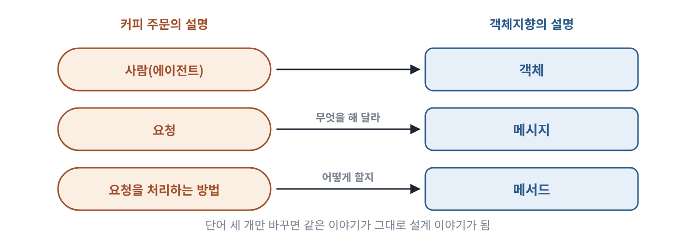
커피 주문의 설명에서 사람, 요청, 처리 방법을 객체, 메시지, 메서드로 바꾸면 객체지향의 설명이 됨
보충 · 실제 사례와 코드
메시지와 메서드는 다름메시지는 보내는 쪽(송신자)의 요청이고, 무엇을 해 달라는지만 담음. 메서드는 메시지를 받은 객체가 그 요청을 실제로 처리하는 방법, 즉 구현임. 아래 코드에서 볼 것은 같은 makeCoffee가 보내는 쪽과 받는 쪽에서 각각 무엇인가임.
barista.makeCoffee(menu); // ① 메시지: 보내는 쪽의 요청
class LatteArtBarista implements Barista {
public Coffee makeCoffee(Menu menu) { // ② 메서드: 받는 쪽의 처리 방법
...
}
}
①은 보내는 쪽이 쓴 줄임. 여기에는 '커피를 만들어 달라'는 요청만 있음.
②는 받는 쪽의 코드임. 라테 아트 바리스타가 그 요청을 실제로 어떻게 처리하는지가 여기에 있음.
같은 메시지라도 받는 객체에 따라 다른 메서드가 실행됨. 이것이 1.1.3에서 본 다형성임. 흔히 '메서드를 호출한다'고 말하지만, 객체지향의 관점에서 더 정확한 표현은 '메시지를 보낸다'임. 어떤 메서드가 실행될지는 보내는 쪽이 아니라 받는 쪽이 정하기 때문임. 5장에서 자세히 다룸.
대응이 매끄러울수록 조심할 점 단어만 바꾸면 설명이 옮겨질 만큼 두 세계가 잘 맞는 것은 사실임. 그러나 '들어가며'에서 보았듯 이것은 개념을 이해하기 위한 비유임. 대응이 매끄러울수록 실제 설계에서도 현실을 그대로 베끼고 싶어지므로, 이해를 위한 비유와 설계 원리를 구분해서 받아들여야 함.
한 줄 정리 사람 → 객체, 요청 → 메시지, 처리 방법 → 메서드. 메시지는 '무엇'을, 메서드는 '어떻게'를 담음.
1.2 역할, 책임, 협력
1.2.2 역할과 책임을 수행하며 협력하는 객체들
요지 시스템의 기능은 책임으로 나뉘어 알맞은 역할을 가진 객체에 맡겨지고, 객체들 사이의 요청과 응답으로 구현됨.
사람의 협력은 목표를 나누는 일임. 저자는 아리스토텔레스의 '인간은 사회적 동물이다'로 시작함. 로빈슨 크루소의 삶이 특별한 이유는 다른 사람과의 협력이 없기 때문임. 사람들은 목표를 더 작은 책임으로 나누고, 각 책임을 맡을 수 있는 역할의 사람이 수행하며, 하다가 필요하면 다른 사람에게 도움을 요청하는 방식으로 목표를 이룸.
객체의 협력은 기능을 나누는 일임. 워드 커닝햄과 켄트 벡의 말처럼 '어떤 객체도 섬이 아니다'. 객체는 자기 책임을 다하는 동시에 시스템의 더 큰 목적을 위해 다른 객체와 협력함. 차이가 있다면, 사람은 공동의 목표를 이루려고 협력하고 객체는 애플리케이션의 기능을 구현하려고 협력한다는 점임.
방식은 같음. 기능은 더 작은 책임으로 나뉘고, 책임은 알맞은 역할을 맡은 객체가 수행함. 결국 시스템은 역할과 책임을 수행하는 객체로 나뉘고, 기능은 객체들 사이의 요청과 응답으로 이루어진 협력으로 구현됨.
책임이 설계의 품질을 정함. 그래서 객체지향 설계는 알맞은 객체에게 알맞은 책임을 맡기는 것에서 시작함. 저자는 책임이 설계의 품질을 정하는 가장 중요한 요소라고 말하고, 책임이 흐린 객체는 애플리케이션의 미래도 흐리게 만든다고 경고함.
역할은 객체의 가면임. 역할은 협력에 참여하는 객체의 페르소나이며, 관련 있는 책임들의 묶음임. 객체의 역할도 1.1.3에서 본 사람의 역할과 같은 네 가지 성질을 가짐. 여러 객체가 같은 역할을 맡을 수 있고, 그래서 서로 대신할 수 있으며, 각 객체는 책임을 수행하는 방법을 스스로 고르고, 하나의 객체가 여러 역할을 동시에 맡을 수 있음.
페르소나(persona)는 고대 그리스 연극에서 배우가 쓰던 가면에서 온 말로, 사회적 역할에 따라 드러내는 얼굴을 뜻함. 객체는 협력마다 다른 가면을 쓰고, 코드에서 그 가면은 인터페이스임. 협력 상대는 가면만 보고 그 뒤의 객체가 무엇인지는 모르기 때문에 대체 가능성과 다형성이 생김.
보충 · 실제 사례와 코드
'어떤 객체도 섬이 아니다'와 CRC 카드 이 문장은 벡과 커닝햄이 1989년 OOPSLA 학회에서 발표한 논문에 나옴. 시인 존 던의 '어떤 사람도 섬이 아니다'를 바꾼 표현임. 같은 논문에서 두 사람은 객체지향적으로 생각하는 법을 가르치는 도구로 CRC 카드(Class-Responsibility-Collaborator, 클래스-책임-협력자)를 제안했음. 색인 카드 한 장에 객체 하나를 적고, 왼쪽에 책임, 오른쪽에 그 책임을 위해 협력할 상대를 적는 방식임.
카드에 책임이 너무 많아 다 적을 수 없다면, 그 객체의 책임을 나눠야 한다는 신호임. 코드를 쓰기 전에 책임과 협력부터 설계하는 이 방식은 4장의 책임 주도 설계로 이어짐.
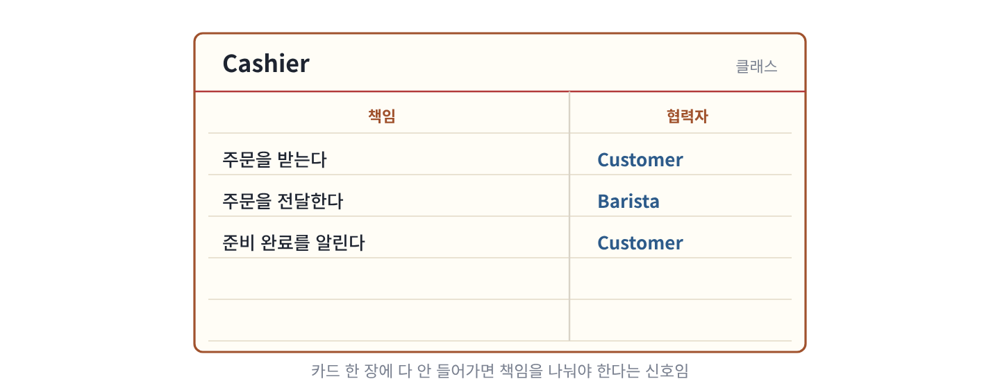
CRC 카드: 색인 카드 한 장에 객체 하나를 적고, 왼쪽에 책임, 오른쪽에 협력할 상대를 적음
책임을 누구에게 맡길까: 정보 전문가 알맞은 객체를 고르는 대표적인 기준은 책임을 수행하는 데 필요한 정보를 가장 많이 가진 객체에게 맡기는 것임. 이를 정보 전문가(Information Expert) 패턴이라고 하며, 크레이그 라만이 정리한 책임 할당 원칙 GRASP의 하나임.
'주문 금액 계산'이라는 책임을 생각해 보면, 손님은 메뉴 가격을 모르므로 맞지 않음. 캐시어는 계산은 할 수 있지만 가격 정보를 다른 곳에서 꺼내 와야 함. 주문(Order)은 주문 항목과 각 항목의 가격을 가지고 있으므로 가장 알맞음. 아래 코드에서 볼 것은 계산에 필요한 정보(items)와 계산하는 행동(totalPrice)이 같은 클래스 안에 있다는 점임.
class Order {
private final List<OrderItem> items; // ① 계산에 필요한 정보
Money totalPrice() { // ② 정보를 가진 객체가 직접 계산함
return items.stream()
.map(OrderItem::price) // ③ 항목마다 가격을 꺼내
.reduce(Money.ZERO, Money::plus); // ④ 0원에서 시작해 모두 더함
}
}
①의 items가 금액 계산에 필요한 정보임. 주문이 이미 가지고 있음.
②에서 주문이 그 정보로 직접 계산함. 바깥에서 항목을 꺼내 갈 필요가 없음.
③에서 각 항목에게 가격을 물어보고, ④에서 0원부터 차례로 더함.
현실의 주문서는 스스로 금액을 계산하지 않지만, 소프트웨어에서는 정보를 가진 객체에게 책임을 주는 편이 알맞음('들어가며' 보충 참고).
책임이 흐린 객체의 징후 이름만 보고는 그 객체가 무엇을 하는지 말할 수 없고, 같은 일이 여러 객체에 나뉘어 있거나 한 객체가 서로 관련 없는 일을 하며, 새 기능을 더할 때마다 '어디에 넣어야 하지'를 고민하게 됨. 저자가 '책임이 불분명한 객체는 애플리케이션의 미래도 불분명하게 만든다'고 한 것은, 이런 객체가 무엇을 고칠 때 어디가 바뀔지 예측할 수 없게 만들기 때문임.
한 줄 정리 기능 → 책임 → 역할 → 객체 순서로 나누고, 객체들의 요청과 응답으로 기능을 구현함. 설계는 알맞은 객체에게 알맞은 책임을 맡기는 데서 시작함.
논의해 보기
Q. '책임을 먼저 정하고 객체를 나중에 정한다'는 순서를 실제 프로젝트에서 지키기 어려운 이유는 무엇일까?
답 보기
대개 화면이나 테이블이 먼저 주어지기 때문임. 그래도 '이 기능을 끝내려면 누가 무엇을 해야 하나'를 먼저 적어 보면 테이블 구조에 끌려가지 않는 객체를 찾을 수 있음.
실무에서는 기획서의 화면 설계나 데이터베이스 테이블이 먼저 나오는 경우가 많음. 그러면 자연스럽게 '주문 테이블이 있으니 Order 클래스, 칸이 다섯 개니 필드 다섯 개'로 출발하게 됨. 이것이 객체를 먼저 정하고 책임을 나중에 붙이는 순서임.
이 순서를 바꾸는 가장 쉬운 방법은 기능 하나를 골라 문장으로 풀어 보는 것임. '주문하면 금액을 계산하고, 쿠폰을 적용하고, 재고를 줄인다'를 적은 뒤, 각 동사(계산, 적용, 줄임)를 누가 하는 게 알맞은지 정함. 그 결과 쿠폰 적용 책임은 Coupon이나 DiscountPolicy처럼 테이블에 없던 객체가 맡게 될 수도 있음.
CRC 카드가 이 연습을 돕는 도구임. 카드에 필드가 아니라 책임과 협력자를 적게 되어 있어서, 저절로 책임부터 생각하게 됨.
1.3 협력 속에 사는 객체
이 절의 맥락 1.2가 '여럿이 함께 일하는 방식'을 다뤘다면, 1.3은 그 안의 객체 하나가 갖춰야 할 성질을 다룸. 협력에 참여하면서도 남의 지시에 끌려다니지 않는 것, 즉 협력성과 자율성의 균형이 이 절의 주제이며, 2장의 상태와 행동 이야기로 이어짐.
1.3.1 상태와 행동을 함께 지닌 자율적인 객체
요지 객체는 협력적이면서 동시에 자율적이어야 하며, 자율성은 상태와 행동을 함께 가질 때 생김.
객체에게는 두 가지 덕목이 필요함. 하나는 충분히 협력적인 것임. 혼자 모든 일을 처리하지 않고, 다른 객체에게 도움을 요청하며, 다른 객체의 요청에는 성실히 응답함. 다른 하나는 충분히 자율적인 것임. 요청에 어떻게 응답할지는 스스로 판단하고 결정함.
두 덕목은 서로 반대쪽으로 당기는 힘임. 협력만 강조하면 객체는 남이 시키는 대로만 움직이는 수동적인 존재가 되고, 자율만 강조하면 아무와도 협력하지 않는 고립된 존재가 됨. 그래서 설계자는 그 사이에서 균형을 잡아야 함.
자율성은 상태와 행동을 함께 가질 때 생김. 객체는 흔히 상태(state)와 행동(behavior)을 함께 지닌 실체로 정의됨. 객체가 스스로 판단하려면, 판단에 필요한 정보(상태)와 그 정보를 다루는 행동을 함께 가지고 있어야 하기 때문임. 커피 머신이 원두가 얼마나 남았는지 모른다면 '원두가 부족하니 만들 수 없다'고 스스로 판단할 수 없음.
자율성은 안과 밖의 경계에서 나옴. 다른 객체는 이 객체가 무엇을 하는지는 알 수 있지만, 어떻게 하는지는 알 수 없음. 이 경계가 분명할수록 객체는 자율적임. 바깥이 안쪽 사정을 모르니, 안쪽을 어떻게 바꾸든 객체 스스로 정할 수 있기 때문임.
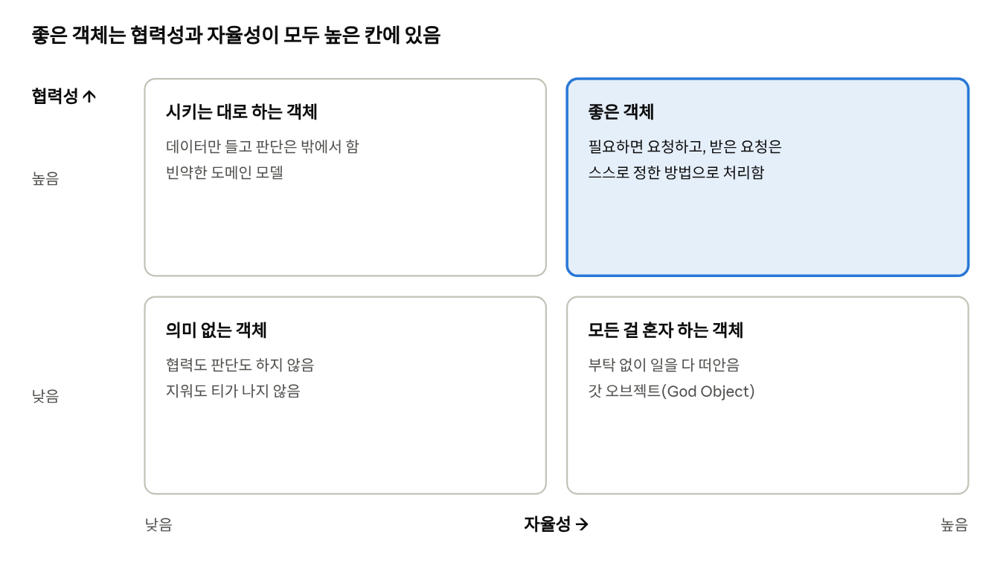
협력만 강조하면 객체가 수동적이 되고, 자율만 강조하면 고립됨. 상태와 행동을 함께 가지고 메시지로만 소통하게 하면 오른쪽 위 칸으로 옮겨 감. 칸 이름은 이 학습서의 보충 해석임
보충 · 실제 사례와 코드
균형이 무너진 두 가지 모습 협력만 지나치면 받은 요청을 그대로 다른 객체에 넘기기만 하는 객체가 됨. 스스로 책임지는 일이 없어 왜 있는지 알 수 없고, 흔히 미들맨(Middle Man)이라고 부름. 자율만 지나치면 다른 객체에 도움을 청하지 않고 모든 일을 혼자 하는 객체가 되며, 1.1.1 보충에서 본 갓 오브젝트가 됨.
상태와 행동을 떼어 놓았을 때와 함께 두었을 때 아래 두 코드는 같은 커피 머신을 다르게 만든 것임. 볼 것은 '원두가 18그램 이상 있어야 한다'는 규칙이 어디에 있느냐임.
// 상태와 행동이 떨어진 구조
class CoffeeMachineData {
int beans; // ① 누구나 바꿀 수 있는 상태
int water;
}
class CoffeeMachineService {
Coffee brew(CoffeeMachineData machine) {
if (machine.beans < 18) throw new IllegalStateException("원두 부족"); // ② 규칙이 바깥에 있음
machine.beans -= 18;
machine.water -= 200;
return new Coffee();
}
}
// 상태와 행동을 함께 가진 구조
class CoffeeMachine {
private int beans; // ③ 바깥에서는 볼 수 없는 상태
private int water;
Coffee brew() {
if (beans < 18) throw new IllegalStateException("원두 부족"); // ④ 규칙이 안에 있음
beans -= 18;
water -= 200;
return new Coffee();
}
}
①의 beans는 공개되어 있어 누구나 machine.beans = -5처럼 바꿀 수 있음.
②의 규칙은 서비스에 있음. 커피를 내리는 다른 서비스가 생기면 이 규칙이 복사되고, 하나만 고치면 어긋남.
③의 beans는 private이라 바깥에서 건드릴 수 없음.
④의 규칙은 머신 안에 있음. 상태를 바꾸는 유일한 길이 brew()이므로, 규칙을 건너뛸 방법이 없음.
스터디 논점: React 컴포넌트는 객체인가 11번가 개발자들의 이 책 스터디에서 나온 질문임. 그렇다는 쪽은 컴포넌트가 입력(props)을 받아 결과를 스스로 정하고 어디서든 다시 쓸 수 있으니 책이 말하는 자율성을 가진다고 봄. 아니라는 쪽은 객체라고 부르기에는 단위가 너무 크다고 봄. 스터디의 결론은 무엇을 객체라고 딱 정하기보다 책임과 자율성의 관점으로 보는 것이 더 중요하다는 쪽이었음.
이 학습서의 기준으로 보면, 안에 상태가 있고 그 상태를 바꾸는 행동을 함께 가진 컴포넌트는 객체에 가깝고, 상태 없이 입력을 출력으로 바꾸기만 하는 컴포넌트는 함수에 가까움. 맨 끝 논쟁 ②에서 코드와 함께 다시 다룸.
한 줄 정리 객체는 협력적이면서 자율적이어야 하고, 자율성은 상태와 행동을 함께 가지고 안과 밖을 분명히 나눌 때 생김.
1.3 협력 속에 사는 객체
1.3.2 협력과 메시지
요지 객체가 다른 객체와 소통하는 유일한 수단은 메시지임.
사람은 말, 글, 몸짓처럼 여러 수단으로 소통함. 객체는 단 하나, 메시지(message)로만 소통함. 메시지를 보내는 객체를 송신자(sender), 받는 객체를 수신자(receiver)라고 함. 객체 사이의 협력은 결국 송신자와 수신자가 메시지를 주고받는 과정임.
'메시지로만'이라는 제한이 중요한 이유는 앞 목의 자율성 때문임. 메시지는 '이것을 해 달라'는 부탁이고, 부탁을 어떻게 처리할지는 받는 쪽이 정함. 그런데 메시지가 아닌 길, 예를 들어 다른 객체의 상태를 직접 바꾸는 길이 열려 있으면 받는 쪽은 판단할 기회조차 얻지 못함.
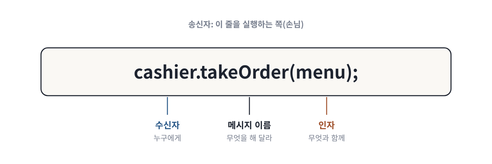
메시지 한 줄은 수신자, 메시지 이름, 인자로 이루어짐. 송신자는 이 줄을 실행하는 쪽임
보충 · 실제 사례와 코드
메시지가 아닌 길로 소통하면 아래 두 줄에서 볼 것은 바리스타가 판단할 기회를 얻느냐임.
barista.beans = 0; // ① 상태를 직접 바꿈: 메시지가 아님
barista.makeCoffee(menu); // ② 메시지를 보냄
①은 바리스타의 원두를 바깥에서 직접 0으로 만듦. 바리스타는 왜 원두가 없어졌는지 모르고, 막을 수도 없음.
②는 '커피를 만들어 달라'고 부탁함. 바리스타는 원두가 있는지 확인하고, 없으면 거절하는 판단을 스스로 할 수 있음.
객체의 자율성은 '메시지로만 소통한다'는 규칙이 지켜질 때 유지됨. 메시지의 구성 요소(수신자, 메시지 이름, 인자)는 5장에서 다시 다룸.
앨런 케이와 메시징 '객체지향'이라는 말을 만든 앨런 케이는 훗날, 이 개념의 핵심은 객체나 클래스가 아니라 메시징이었다고 밝혔음(1998년 Squeak 메일링 리스트). 그가 설계한 Smalltalk에서는 3 + 4조차 객체 3에게 + 4라는 메시지를 보내는 것으로 해석함. 이 생각은 1.4의 '클래스가 아니라 객체를 지향하라'와 5장의 '메시지를 따르라'로 이어짐.
한 줄 정리 객체는 메시지로만 소통하고, 협력은 송신자와 수신자가 메시지를 주고받는 과정임.
1.3 협력 속에 사는 객체
1.3.3 메서드와 자율성
요지 메시지와 메서드를 분리하면 객체의 자율성이 높아지며, 이는 캡슐화와 깊이 이어짐.
수신자가 메시지를 처리하는 방법을 메서드(method)라고 함. 메서드는 보통 클래스 안에 정의된 함수로 구현됨.
메시지와 메서드는 나뉘어 있음. 송신자는 메시지를 보낼 뿐이고, 어떤 메서드로 처리할지는 수신자가 정함. 사람이 직접 커피를 내리는 바리스타와 기계로 추출하는 로봇 바리스타는 같은 makeCoffee() 메시지를 받아도 서로 다른 메서드를 실행함. 송신자는 메시지만 알고 메서드는 모르기 때문에, 수신자를 바꿔 끼워도 송신자의 코드는 그대로임.
이 분리 덕분에 수신자는 처리 방법을 자유롭게 고르거나 바꿀 수 있음. 그래서 메시지와 메서드의 분리는 객체의 자율성을 높이고, 안쪽을 감추는 캡슐화(encapsulation)와 깊이 이어짐.
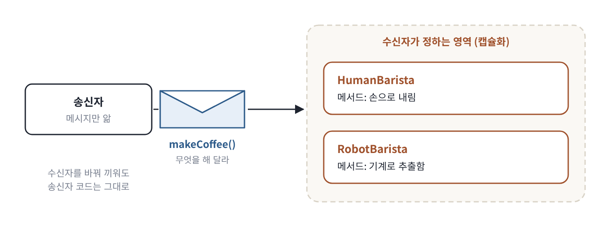
송신자는 메시지만 보내고, 어떤 메서드로 처리할지는 수신자가 정함. 이 분리가 자율성과 캡슐화를 만듦
보충 · 실제 사례와 코드
어떤 메서드가 실행될지는 실행할 때 정해짐: 동적 바인딩 아래 코드에서 볼 것은 코드를 쓰는 시점에는 어떤 makeCoffee가 실행될지 알 수 없다는 점임.
Barista barista = isWeekend ? new LatteArtBarista() : new AromaBarista(); // ① 요일에 따라 다른 바리스타
barista.makeCoffee(menu); // ② 같은 메시지
①에서 주말이면 라테 아트 바리스타, 평일이면 향 중심 바리스타가 들어감. 어느 쪽인지는 프로그램이 실행되어 봐야 앎.
②의 메시지는 같지만, 실제로 실행되는 메서드는 ①에서 어떤 객체가 들어갔느냐에 따라 달라짐.
메시지와 메서드가 나뉘어 있기 때문에 가능한 일이고, 이를 동적 바인딩(dynamic binding)이라고 함. 1.1.3의 다형성은 이 구조 위에서 동작함.
캡슐화가 감추는 두 가지 흔히 캡슐화를 '필드를 private으로 만드는 것'으로만 이해함. 이것은 객체가 가진 데이터를 감추는 상태의 캡슐화(private int beans)임. 그런데 메시지와 메서드의 분리처럼 메시지를 처리하는 방법을 감추는 것, 즉 구현의 캡슐화(makeCoffee의 안쪽 절차)도 캡슐화임. 5장에서 두 측면을 다시 다룸.
한 줄 정리 메서드 = 수신자가 메시지를 처리하는 방법. 메시지와 메서드를 나누면 객체가 자율적이 되고, 이것이 캡슐화로 이어짐.
논의해 보기
Q1. getter로 상태를 꺼내 밖에서 판단하는 코드와, 메시지를 보내 객체가 판단하게 하는 코드는 무엇이 다를까?
답 보기
판단 규칙이 있는 곳이 다름. 앞쪽은 규칙이 호출하는 쪽마다 퍼지고, 뒤쪽은 객체 안 한 곳에 모임.
if (machine.getBeans() >= 18) machine.setBeans(machine.getBeans() - 18)처럼 쓰면, '원두가 18그램 이상이어야 한다'는 규칙을 커피를 내리는 모든 곳이 알아야 함. 규칙이 20그램으로 바뀌면 그 모든 곳을 찾아 고쳐야 하고, 하나라도 빠뜨리면 버그가 됨.
machine.brew()처럼 메시지를 보내면, 규칙은 커피 머신 안에만 있음. 바깥은 '내려 달라'고 부탁할 뿐이고, 원두 확인은 머신이 스스로 함.
이 차이를 흔히 '묻지 말고 시켜라'(Tell, Don't Ask)라고 부름. 상태를 물어서 바깥에서 판단하지 말고, 할 일을 시켜서 객체가 판단하게 하라는 뜻임. 1.3.1의 자율성을 코드 습관으로 바꾼 원칙이고, 5장에서 다시 나옴.
Q2. 자율성이 지나치면 어떤 문제가 생길까?
답 보기
모든 일을 혼자 하려는 객체는 협력할 이유가 사라지고, 거대한 덩어리(갓 오브젝트)가 됨.
자율성을 '남에게 기대지 않는 것'으로만 이해하면, 주문 객체가 금액 계산, 결제, 재고 차감, 배송 요청까지 모두 직접 하게 됨. 처음에는 한 곳에 다 있어서 편해 보이지만, 결제 방식이 바뀌어도, 배송사가 바뀌어도 이 객체를 고쳐야 함. 고쳐야 하는 이유가 여러 가지가 된 것임.
저자가 '협력적이면서 자율적'이라고 두 조건을 함께 건 이유가 여기에 있음. 자율성은 '내 책임은 내가 어떻게 할지 정한다'는 뜻이지, '모든 일을 내가 한다'는 뜻이 아님. 내 책임이 아닌 일은 그 일을 잘 아는 객체에게 메시지로 부탁하는 것이 맞음.
1.4 객체지향의 본질
이 절의 맥락 1장 전체를 한 문장으로 묶는 결론부임. 앞의 절들에서 쌓은 역할, 책임, 협력, 메시지, 자율성을 모아 '객체지향에서 가장 중요한 것은 무엇인가'에 답함. 저자의 답은 클래스가 아니라 객체, 그리고 객체 사이의 협력임.
1.4.1 객체를 지향하라
요지 객체지향의 핵심은 클래스가 아니라, 알맞은 책임을 수행하는 역할들 사이의 유연하고 튼튼한 협력 관계임.
1장을 한데 모으면 저자는 1장의 내용을 이렇게 정리함. 객체지향은 시스템을 서로 상호작용하는 자율적인 객체들의 공동체로 보고, 객체 단위로 시스템을 나누는 방법임. 자율적인 객체란 상태와 행동을 함께 가지며 스스로를 책임지는 객체임.
객체는 시스템의 행동을 구현하려고 다른 객체와 협력하고, 협력 안에서 역할을 맡으며, 역할은 관련된 책임의 묶음임. 객체는 메시지를 보내 협력하고, 메시지를 받은 객체는 처리에 알맞은 메서드를 스스로 고름.
클래스는 핵심이 아님. 앨런 케이 같은 선구자들의 뜻과 달리, 많은 사람이 객체지향을 '클래스를 지향하는 것'으로 받아들였음. 그러나 클래스는 객체지향을 구현하는 수단 중 하나일 뿐임. 그 증거로 자바스크립트처럼 프로토타입 기반의 객체지향 언어에는 원래 클래스가 없고 객체만 있음.
중요한 것은 클래스 사이의 정적인 관계가 아니라, 메시지를 주고받는 객체 사이의 동적인 관계임.
그래서 객체를 지향하라. 설계는 클래스가 아니라 객체에서 출발해야 함. 먼저 객체가 협력 안에서 어떤 역할과 책임을 맡을지 정하고, 클래스와 메서드의 구조는 그다음에 정함.
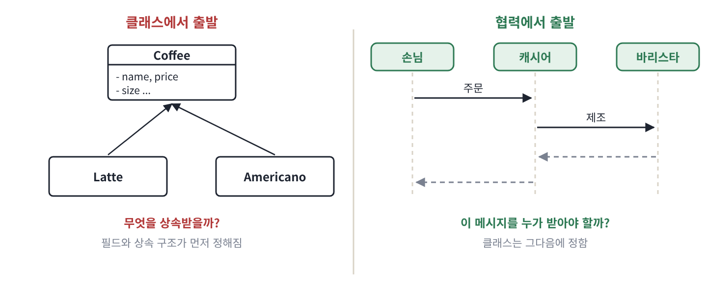
클래스에서 출발하면 필드와 상속부터 정하게 되고, 협력에서 출발하면 누가 어떤 메시지를 받을지부터 정하게 됨
보충 · 실제 사례와 코드
클래스 없이도 객체지향이 됨: 프로토타입 아래 자바스크립트 코드에서 볼 것은 class라는 단어가 한 번도 나오지 않는데도 객체, 메시지, 다형성이 모두 있다는 점임.
const barista = { // ① 클래스 없이 바로 만든 객체
makeCoffee(menu) { return `${menu} 완성`; },
};
const latteArtist = Object.create(barista); // ② barista를 원형으로 삼는 새 객체
latteArtist.makeCoffee = function (menu) { // ③ 같은 메시지에 다르게 응답하도록 바꿈
return `${menu} 완성, 라테 아트 추가`;
};
barista.makeCoffee("라테"); // ④ "라테 완성"
latteArtist.makeCoffee("라테"); // ④ "라테 완성, 라테 아트 추가"
①에서 클래스를 정의하지 않고 객체를 바로 만듦.
②의 Object.create는 'barista를 본보기로 삼는 새 객체'를 만듦. 상속과 비슷한 효과지만 클래스가 아니라 객체에서 출발함.
③에서 새 객체만의 makeCoffee를 정함.
④에서 같은 메시지 makeCoffee("라테")에 두 객체가 다르게 응답함. 다형성이 클래스 없이 생긴 것임.
자바스크립트의 class 문법(ES2015)은 이 프로토타입 위에 얹은 문법일 뿐, 동작 원리는 바뀌지 않았음. 3장 3.5.4에서 다시 다룸.
클래스 중심과 객체 중심의 차이 클래스에서 출발하면 '어떤 클래스와 필드가 필요한가', '무엇을 상속받을까'를 먼저 묻게 되고, 흔히 데이터 중심 설계와 상속 남용으로 이어짐. 객체에서 출발하면 '어떤 협력과 메시지가 필요한가', '이 메시지를 누가 받아야 할까'를 먼저 묻게 되고, 책임 중심 설계와 작고 바꿔 끼울 수 있는 역할로 이어짐.
상속에 대한 흔한 오해 클래스 중심으로 생각하면 코드를 다시 쓰려고 상속을 쓰는 경향이 생김. 그러나 코드 재사용만을 위한 상속은 부모와 자식을 강하게 묶어, 부모가 바뀌면 자식 전체가 흔들림. 그래서 디자인 패턴의 고전인 GoF는 '상속보다 합성(composition)을 선호하라'고 권함. 2장 논쟁 ②와 3장 3.4에서 다시 다룸.
이후 장과의 연결 상태, 행동, 식별자는 2장 '이상한 나라의 객체'에서, 클래스와 타입은 3장 '타입과 추상화'에서, 역할, 책임, 협력은 4장에서, 메시지와 메서드와 캡슐화는 5장 '책임과 메시지'에서, 이것들을 코드로 옮기는 일은 7장 '함께 모으기'에서 다룸.
한 줄 정리 객체지향 = 자율적인 객체들의 협력 공동체. 클래스는 구현 수단이고, 설계는 역할과 책임에서 출발함.
논의해 보기
Q. 클래스 다이어그램부터 그리는 습관을 '객체를 지향하라'는 관점으로 바꾸려면 무엇부터 해야 할까?
답 보기
클래스 대신 협력하는 모습(시퀀스 다이어그램)을 먼저 그려 보는 것임.
클래스 다이어그램은 상자 안에 필드와 메서드를 적고 상자끼리 상속 화살표로 잇는 그림임. 이것부터 그리면 자연스럽게 '어떤 데이터가 있지?', '누가 누구를 상속하지?'를 먼저 생각하게 됨.
시퀀스 다이어그램은 세로줄로 참여자를 세우고, 누가 누구에게 어떤 메시지를 어떤 순서로 보내는지를 화살표로 그리는 그림임. 이것부터 그리면 '이 기능을 위해 어떤 부탁이 오가야 하지?', '이 부탁은 누가 받아야 하지?'를 먼저 생각하게 됨.
메시지와 받는 쪽이 정해지면, 각 참여자가 받는 메시지가 곧 그 객체의 책임이 됨. 클래스는 그 책임을 코드로 옮기는 수단으로 자연스럽게 따라 나옴. 화이트보드에 손님, 캐시어, 바리스타를 세우고 화살표부터 그려 보는 것이 가장 쉬운 시작임.
1장 정리
한 문단으로 다시 읽기
'객체지향은 현실의 모방'이라는 설명은 처음 이해하는 데는 도움이 되지만 설계 원리로는 맞지 않음. 객체지향의 목표는 현실을 베끼는 것이 아니라 요구를 만족하는 새로운 세계를 만드는 것임.
그 세계의 원리는 역할, 책임, 협력이고, 이는 커피 주문처럼 일상에 이미 있음. 협력은 요청과 응답의 연쇄이고, 응답은 요청과 반대 방향으로 돌아옴. 역할은 책임의 묶음이어서, 같은 역할끼리는 서로 대신할 수 있고(대체 가능성), 같은 요청에 각자 다르게 응답할 수 있음(다형성).
객체는 협력적이면서 자율적이어야 하고, 자율성은 상태와 행동을 함께 가지며 메시지로만 소통할 때 생김. 메시지와 메서드를 나누면 자율성과 캡슐화가 생김. 결국 객체지향의 핵심은 클래스가 아니라 객체 사이의 동적인 협력임.
인사이트
설계의 출발점은 '현실에 무엇이 있는가'가 아니라 '이 기능을 위해 누가 무엇을 책임지는가'임. 현실에 짝이 있는 객체만 찾으면 RetryPolicy나 DiscountPolicy처럼 현실에 없지만 꼭 필요한 객체를 놓침.
새 기능을 받으면 명사부터 뽑지 말고, 기능을 문장으로 풀어 동사(책임)를 먼저 찾는 습관이 좋음.
서로 몰라도 되는 것이 많을수록 좋은 협력임. 손님이 원두를 몰라도 되고 캐시어가 제조법을 몰라도 되기 때문에, 바리스타가 무엇을 바꾸든 나머지는 그대로임.
코드 리뷰에서 '이 클래스가 왜 저것까지 알아야 하지?'라는 질문이 결합도를 낮추는 가장 빠른 길임.
요청은 '무엇'만 말해야 함. 요청이 '어떻게'까지 지시하면 받는 쪽이 방법을 고를 수 없으므로 자율성과 다형성이 함께 사라짐. 메서드 이름이 절차(grindBeansAndExtract)가 아니라 결과(makeCoffee)를 말하는지 보면 금방 알 수 있음.
대체 가능성은 메서드 이름이 아니라 약속을 지킬 때 생김. 같은 interface를 구현했다고 끝이 아님. 진동벨을 울리지 않는 무인 주문기는 캐시어를 대신할 수 없음. 구현을 추가할 때는 '쓰는 쪽이 기대하는 것을 다 지키는가'를 함께 확인해야 함.
다이어그램
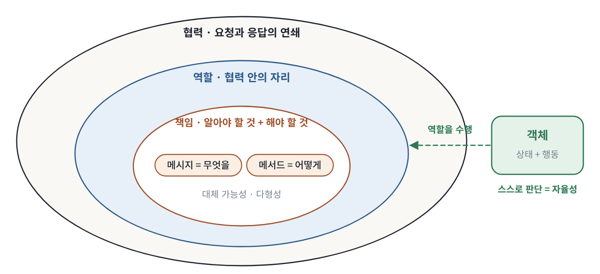
1장의 용어는 바깥에서 안쪽으로 포함되는 구조임. 협력 안에 역할이, 역할 안에 책임이 있고, 객체는 그 역할을 맡아 수행함
확인 질문
먼저 스스로 답해 본 뒤 답을 펼쳐 비교함.
Q1. 지금 다루는 코드에서 현실에 짝이 없는 객체를 하나 고르고, 그 책임을 한 문장으로 말해 보라.
답 보기
예를 들어 RetryPolicy는 '실패한 요청을 몇 번, 어떤 간격으로 다시 시도할지 판단한다'는 책임을 가짐.
현실에는 '재시도 정책'이라는 사물이 없음. 그런데도 좋은 객체인 이유는 책임이 분명하기 때문임. 재시도 횟수나 간격 규칙이 바뀌면 이 객체 하나만 고치면 되고, 이름만 보고도 무엇을 하는지 알 수 있음.
판단 기준은 '현실과 닮았는가'가 아니라 '책임을 한 문장으로 말할 수 있는가'임. 한 문장으로 말이 안 되거나 '그리고'가 여러 번 들어간다면 책임이 너무 많다는 신호임(들어가며, 1.2.2).
Q2. 현실 비유가 효과적으로 설명하는 세 가지 대응은 무엇인가?
답 보기
스스로 생각하는 생명체는 자율성과 캡슐화를, 약속으로 협력하는 사람들은 메시지와 협력을, 현실의 개념이 구현까지 같은 이름으로 이어지는 과정은 연결완전성을 설명함.
첫째, 생명체는 바깥이 시키는 대로가 아니라 스스로 판단해 움직임. 객체가 자기 상태를 감추고 스스로 판단한다는 자율성과 캡슐화를 이해하기 좋음. 둘째, 사람들은 '이것 좀 해 줘'라는 약속으로 함께 일함. 객체가 메시지로 협력한다는 것을 이해하기 좋음. 셋째, 업무의 '주문'이 코드의 Order로 이어지면 누구나 같은 뜻으로 읽음.
다만 세 가지 모두 이해를 돕는 비유이지, 현실을 그대로 옮기라는 설계 지침이 아님(들어가며).
Q3. 캐시어가 없어지고 손님이 바리스타에게 직접 주문하면 협력 구조는 어떻게 달라지는가?
답 보기
단계는 줄지만, 바리스타가 주문 접수, 결제, 호출까지 떠안아 병목이 되고 손님은 바리스타의 사정을 더 많이 알아야 함. 즉 결합도가 높아짐.
손님이 적을 때는 단계가 하나 줄어 오히려 빠를 수 있음. 그러나 손님이 늘면 바리스타는 커피를 만드는 도중에도 주문을 받고 돈을 받아야 하므로 일이 밀림. 결제 방식이 바뀌어도, 제조법이 바뀌어도 바리스타의 일이 바뀜(갓 오브젝트, 1.1.1).
손님 쪽도 달라짐. 바리스타가 바쁜지, 지금 무엇을 만드는지 같은 사정을 보고 주문해야 함. 캐시어가 있을 때는 몰라도 됐던 것들임. 캐시어는 단순한 중간 단계가 아니라 둘 사이의 결합도를 낮춰 주는 역할이었던 셈임.
Q4. cashier.takeOrder()의 반환을 기다리는 방식과 진동벨 방식은 손님에게 어떤 차이가 있는가?
답 보기
반환을 기다리면(동기) 커피가 나올 때까지 손님은 다른 일을 할 수 없고, 진동벨(비동기)은 기다리는 동안 다른 일을 할 수 있음. 대신 진동벨 방식은 알림이 오지 않는 실패에 대비해야 함.
동기 방식에서 손님은 창구 앞에 서서 커피를 받을 때까지 움직이지 못함. 코드로는 takeOrder가 반환될 때까지 다음 줄로 넘어가지 못하는 것임. 대신 흐름이 단순해서 언제 무슨 일이 일어나는지 따라가기 쉬움.
비동기 방식에서 손님은 진동벨을 받고 자리에 가서 다른 일을 함. 시간을 아낄 수 있지만, 벨이 고장 나거나 주문이 빠지면 손님은 영원히 기다릴 수 있음. 그래서 코드에서는 타임아웃(일정 시간이 지나면 포기)과 재시도를 함께 정함(1.1.1 보충).
Q5. 다형성을 자신의 말로 정의하고, 커피 전문점이 아닌 예를 하나 들어 보라.
답 보기
같은 메시지를 받아도 받는 객체마다 자기 방식으로 응답하는 능력임.
예를 들어 pay(amount)라는 메시지를 카드 결제, 계좌 이체, 포인트 결제 객체가 각각 받는다고 함. 카드 결제는 카드사에 승인을 요청하고, 계좌 이체는 은행 API를 부르고, 포인트 결제는 포인트 잔액에서 뺌. 보내는 쪽은 결제 수단이 무엇인지 몰라도 pay만 보내면 됨.
다형성이 가능한 이유는 메시지가 '무엇'만 말하고, '어떻게'는 받는 쪽이 메서드로 정하기 때문임(1.1.3, 1.3.3). 덕분에 새 결제 수단이 생겨도 보내는 쪽 코드는 고치지 않아도 됨(개방-폐쇄 원칙).
Q6. 진동벨을 울리지 않는 무인 주문기는 캐시어를 대신할 수 있는가?
답 보기
없음. 같은 메서드 이름을 가졌더라도, 손님이 기대하는 책임인 '완성되면 알려 준다'는 약속을 지키지 않기 때문임.
코드에서 무인 주문기가 Cashier 인터페이스를 구현했다면 컴파일러는 문제를 찾지 못함. takeOrder라는 이름의 메서드가 있기 때문임. 그러나 손님은 주문한 뒤 벨을 기다리는데, 벨은 영원히 울리지 않음. 프로그램은 오류 없이 멈춰 버리는 셈임.
대체 가능성은 형식(이름이 같음)이 아니라 계약(약속한 결과를 보장함)을 지킬 때 생김. 이것이 리스코프 치환 원칙이고(1.1.3 보충), 3장에서 정사각형과 직사각형 예로 다시 나옴.
Q7. '주문 금액 계산' 책임은 손님, 캐시어, 주문 중 누가 맡아야 하는가?
답 보기
주문임. 금액 계산에 필요한 정보(주문 항목과 각 항목의 가격)를 가장 많이 가진 객체이기 때문임(정보 전문가 패턴).
손님은 메뉴 가격을 모르므로 계산할 수 없음. 캐시어는 계산할 수는 있지만, 주문에서 항목을 하나하나 꺼내 와야 함. 그러면 주문의 안쪽 구조를 캐시어가 알게 되어 결합도가 높아짐.
주문은 이미 항목과 가격을 가지고 있으므로 order.totalPrice()로 스스로 계산할 수 있음. 현실의 주문서는 스스로 계산하지 않지만, 소프트웨어에서는 정보를 가진 쪽에 책임을 주는 것이 알맞음(1.2.2 보충, 2장 의인화).
결론
맨 앞의 '이 장에서 배울 것' 다섯 줄에 한 줄씩 답하면 다음과 같음.
이 장에서 배울 것
한 줄 답
다시 볼 곳
① 현실 모방이 틀린 이유
비유는 이해 도구일 뿐. 현실은 하나가 아니고, 객체는 현실보다 능동적임
들어가며
② 협력과 응답의 방향
협력은 요청과 응답의 연쇄. 응답은 요청이 지나온 길을 거꾸로 돌아옴(콜 스택)
1.1.2
③ 역할, 책임, 대체 가능성, 다형성
역할은 책임의 묶음. 역할에 기대므로 바꿔 끼울 수 있고, 같은 요청에 다르게 응답함
1.1.3, 1.2.2
④ 메시지와 메서드
메시지는 무엇을, 메서드는 어떻게. 나누면 받는 쪽이 스스로 정하므로 자율성과 캡슐화가 생김
1.3
⑤ 객체를 지향하라
클래스가 아니라 협력과 메시지부터 정하고, 클래스는 마지막에 고름
1.4
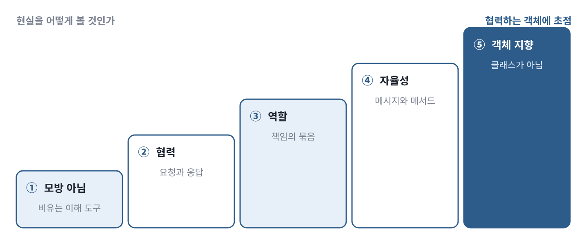
1장의 다섯 가지 목표는 앞 단계 위에 다음 단계가 올라가는 계단 구조임
객체지향의 본질은 클래스가 아니라, 알맞은 책임을 맡은 객체들이 요청과 응답으로 협력하는 것임. 그러므로 설계는 '어떤 클래스를 만들까'가 아니라 '이 기능을 위해 누가 무엇을 책임지는가'에서 시작함.
다 읽었다면 맨 앞의 '이 장에서 배울 것'으로 돌아가, 위 표를 보지 않고 말할 수 있는 항목에 체크함.
다음 장으로 2장 '이상한 나라의 객체'는 협력에 참여하는 객체 하나의 안쪽을 들여다봄. 1.3에서 '상태와 행동을 함께 가진 자율적인 객체'라고만 했던 것을 상태, 행동, 식별자로 나누어 자세히 설명함.
지금의 객체지향: 네 가지 논쟁
이 절을 읽기 전에 여기서 '논쟁'은 책이 틀렸다는 뜻이 아님. 책의 주장을 실제 개발에 적용할 때 '어디까지 밀고 갈 것인가'를 두고 개발자들의 의견이 갈리는 지점임. 각 논쟁은 같은 순서로 읽으면 됨. 무엇이 쟁점인지 → 일상의 비유로 풀면 어떤지 → 알아 둘 개념과 이론 → 1장과 어떻게 이어지는지 → 코드 → 질문과 답.
① 현실을 닮게 만드는 것은 틀린 걸까: 도메인 주도 설계
무엇이 쟁점인가
1장은 '객체지향은 현실의 모방'이라는 통념을 반박함. 그런데 실무에서 널리 쓰이는 도메인 주도 설계(Domain-Driven Design, DDD)는 오히려 '현실 업무를 코드에 충실히 담으라'고 함. 그래서 처음 공부하는 사람은 '현실을 닮아야 하는가, 닮지 말아야 하는가'에서 헷갈리기 쉬움.
쉽게 풀면
지도를 떠올리면 됨. 지하철 노선도는 역 이름은 현실 그대로 쓰지만, 역 사이의 거리와 방향은 현실과 전혀 다르게 그림. 이름이 같아서 누구나 알아보고, 모양이 달라서 보기 쉬움.
DDD가 닮으라는 것은 노선도의 '역 이름'이고, 저자가 반대하는 것은 '실제 거리와 방향까지 그대로 그리는 것'임. 둘은 서로 다른 부분을 말하고 있는 셈임.
알아 둘 개념과 이론
도메인(domain)은 소프트웨어가 다루는 업무 영역임. 쇼핑몰이라면 주문, 결제, 배송이 도메인임. DDD는 에릭 에반스가 2003년 같은 이름의 책에서 정리한 설계 방법으로, 복잡한 업무 규칙을 코드에 잘 담는 데 초점을 둠.
DDD의 중심 개념 하나가 유비쿼터스 언어(ubiquitous language)임. 기획자와 개발자가 같은 단어를 쓰고, 그 단어를 코드에도 그대로 쓰자는 원칙임. 1장 '들어가며'의 연결완전성과 같은 생각임. 또 '들어가며' 보충에서 본 바운디드 컨텍스트도 DDD의 개념으로, 같은 단어라도 맥락마다 뜻이 다를 수 있으니 맥락의 경계를 분명히 하라는 것임.
1장과의 연결
두 입장은 생각보다 가까움. DDD가 닮으라는 것은 '단어와 개념'이고, 저자가 반대하는 것은 '현실의 구조와 능력까지 복사하는 것'임. 2장의 '은유'가 바로 이 절충안임. 이름은 현실에서 빌리고, 능력은 협력에 맞게 새로 부여함.
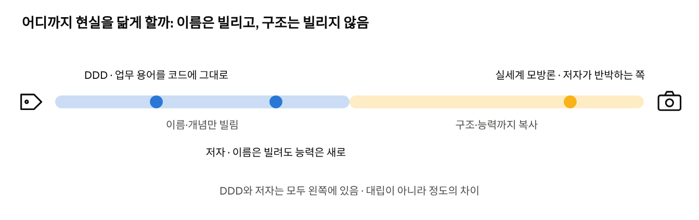
'닮아야 한다'와 '닮을 필요 없다'는 어디를 닮게 하느냐의 차이임. 이름과 개념은 빌리고, 책임은 협력에서 정함
코드로 보기
아래 코드에서 볼 것은 이름과 능력이 각각 어디서 왔느냐임.
// 업무에서 쓰는 말: "주문을 취소한다"
class Order { // ① 이름은 현실에서 빌림
void cancel() { // ② 동사도 업무 용어 그대로
if (status == SHIPPED) // ③ 능력은 현실과 다름:
throw new IllegalStateException("배송이 시작되어 취소할 수 없습니다");
status = CANCELED; // 주문이 스스로 취소 가능 여부를 판단함
}
}
①의 Order와 ②의 cancel은 업무에서 쓰는 말을 그대로 씀. DDD와 저자가 모두 동의하는 부분임.
③에서 주문이 스스로 '취소할 수 있는 상태인가'를 판단함. 종이 주문서는 이런 일을 할 수 없음. 저자가 말하는 '현실을 넘어선 능력'임.
말은 업무 용어를 따르되, 책임은 정보를 가진 쪽에 두는 것이 좋음. 그래서 coupon.applyTo(order)처럼 쿠폰이 판단하게 하는 쪽이 대개 나음.
문장의 주어가 회원이라고 해서 회원이 쿠폰 규칙을 알아야 하는 것은 아님. 쿠폰을 쓸 수 있는지는 쿠폰의 유효기간, 최소 주문 금액, 적용 가능한 상품 같은 정보로 판단하는데, 이 정보는 쿠폰이 가지고 있음(정보 전문가, 1.2.2).
다만 '쿠폰을 쓴다'는 말 자체는 살리는 것이 좋음. 예를 들어 주문 화면의 흐름은 order.useCoupon(coupon)으로 표현하고, 그 안에서 coupon.applyTo(this)로 판단을 맡기면, 업무 용어와 책임 배치를 둘 다 지킬 수 있음.
지금의 객체지향: 네 가지 논쟁
② 함수나 React 컴포넌트도 객체인가
무엇이 쟁점인가
요즘 웹 프론트엔드는 클래스보다 함수를 많이 씀. 대표적인 것이 React 컴포넌트임. 그래서 '클래스가 없는데도 객체지향인가'라는 질문이 자주 나옴. 1.4의 '클래스가 아니라 객체를 지향하라'와 바로 이어지는 질문임.
쉽게 풀면
계산기와 자판기를 비교하면 됨. 계산기의 '2 더하기 3'은 언제 눌러도 5임. 기억하는 것이 없고 입력에 따라 결과만 냄. 자판기는 안에 든 돈을 기억하고, 같은 버튼을 눌러도 돈이 얼마나 들어 있느냐에 따라 결과가 다름.
함수 중에도 계산기 같은 것이 있고 자판기 같은 것이 있음. 자판기 같은 함수라면 객체에 가깝다고 볼 수 있음.
알아 둘 개념과 이론
React는 화면을 만드는 자바스크립트 라이브러리이고, 컴포넌트는 버튼이나 입력창처럼 화면의 한 조각을 만드는 함수임. 컴포넌트는 useState 같은 기능으로 자기만의 상태를 가질 수 있음.
순수 함수는 같은 입력에는 항상 같은 출력을 내고 바깥 상태를 바꾸지 않는 함수임. 상태가 없으므로 2장의 기준(상태, 행동, 식별자)으로 보면 객체라기보다 '행동' 그 자체에 가까움.
1장과의 연결
1.4에서 보았듯 객체지향의 핵심은 클래스가 아니라 객체와 협력임. 그래서 '클래스가 있느냐'로 판단하지 말고, '상태와 그 상태를 바꾸는 행동을 함께 가지는가', '메시지(이벤트)에 스스로 응답하는가'로 판단하는 것이 1장의 관점에 맞음. 11번가 개발자 스터디도 객체를 딱 정의하기보다 책임과 자율성의 관점으로 보자는 쪽으로 의견이 모였음(1.3.1 보충).
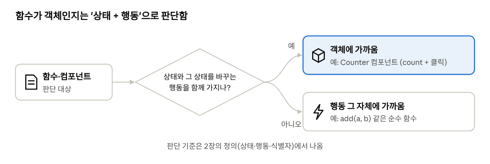
상태와 그 상태를 바꾸는 행동을 함께 가지면 객체에 가깝고, 상태 없이 입력을 출력으로 바꾸기만 하면 행동 자체에 가까움
코드로 보기
아래 두 함수에서 볼 것은 '기억하는 것'이 있느냐임.
// 상태와 행동을 함께 가진 컴포넌트: 객체에 가까움
function Counter() {
const [count, setCount] = useState(0); // ① 상태: 지금까지 누른 횟수
return (
<button onClick={() => setCount(count + 1)}> {/* ② 행동: 누르면 상태가 바뀜 */}
{count}
</button>
);
}
// 상태 없이 입력으로 결과만 내는 순수 함수: 행동 자체에 가까움
function add(a, b) {
return a + b; // ③ 기억하는 것이 없음
}
①의 count는 버튼을 누른 횟수를 기억하는 상태임.
②에서 클릭이라는 메시지를 받으면 스스로 상태를 바꿈. 상태와 행동이 함께 있고, 바깥은 클릭만 할 뿐 count를 직접 바꾸지 못함.
③의 add는 기억하는 것이 없음. 같은 입력이면 언제나 같은 결과임.
Q. 상태가 없는 React 컴포넌트만으로 만든 화면은 객체지향이 아닌가?
답 보기
그 화면 자체는 함수형에 가깝지만, 그것이 잘못이라는 뜻은 아님. 상태가 필요한 곳과 필요 없는 곳을 나눈 결과일 수 있음.
실제로 좋은 React 코드는 상태를 몇 군데에만 두고, 나머지 컴포넌트는 받은 값을 화면으로 그리기만 하는 순수한 함수로 만듦. 상태가 여러 곳에 흩어지면 어디서 값이 바뀌었는지 추적하기 어렵기 때문임.
1장의 관점으로 보면, 상태를 가진 컴포넌트가 '그 상태에 관한 책임'을 맡고, 나머지는 그 결과를 보여 주는 역할을 맡은 셈임. 책임을 알맞은 곳에 나눴다는 점에서는 객체지향의 생각과 같음. 2장 논쟁 ④에서 본 것처럼, 요즘은 객체지향과 함수형을 섞어 쓰는 것이 일반적임.
지금의 객체지향: 네 가지 논쟁
③ 멀티 에이전트 AI에서 다시 만나는 역할, 책임, 협력
무엇이 쟁점인가
여러 AI 에이전트가 일을 나눠 맡는 시스템이 빠르게 늘면서, '에이전트에게 역할을 어떻게 나눌까'가 설계의 핵심 질문이 되었음. 1장대로라면 역할(책임) 단위로 나누는 것이 자연스러운데, 실제로 운영해 본 회사들의 보고는 역할을 '직무'로 나누면 오히려 실패한다고 함. 어디서 경계를 그을지가 쟁점임.
쉽게 풀면
AI 에이전트는 사람이 준 목표를 이루려고 스스로 계획을 세우고, 도구를 쓰고, 결과를 돌려주는 AI 프로그램임. 멀티 에이전트 시스템은 에이전트 여럿이 일을 나눠 맡아 하나의 목표를 이루는 구조이고, 에이전트들에게 일을 나눠 주고 결과를 모으는 조율자를 오케스트레이터(orchestrator)라고 함. 커피 주문의 캐시어와 비슷한 자리임.
'시장 조사 보고서 쓰기'를 세 에이전트에게 맡긴다고 하면, 조사 에이전트가 자료를 모으고, 작성 에이전트가 글을 쓰고, 검토 에이전트가 확인함. 각 에이전트의 목적과 할 수 있는 일과 경계를 적는 것이 책임 정의이고, 결과를 넘기는 것이 메시지를 통한 협력이며, 작성 에이전트를 다른 모델로 바꿔도 흐름이 그대로라면 대체 가능성임.
알아 둘 개념과 이론
실제 운영 보고에서 확인된 기준은 다섯 가지임.
첫째, 단일 에이전트에서 시작함. 멀티 에이전트를 몇 달 동안 만들었는데 단일 에이전트의 지시문(프롬프트)을 다듬으니 같은 결과가 나온 사례가 많았다고 함. 복잡도는 근거가 있을 때만 더함(Anthropic, 2026.1 · OpenAI 실무 가이드).
둘째, 나눠서 이득인 경우는 세 가지임. 크고 불필요한 중간 결과를 격리해 맥락을 보호할 때, 독립된 갈래를 동시에 처리할 때(이득은 속도보다 철저함), 도구가 20개 이상이거나 서로 무관한 영역을 오가야 할 때임(Anthropic, 2026.1).
셋째, 직무가 아니라 맥락으로 나눔. 기획 → 구현 → 테스트 → 검토처럼 나누면 넘길 때마다 정보가 새는 '전화 게임'이 됨. 좋은 경계는 서로 독립적인 조사 경로, 인터페이스가 깔끔한 구성 요소, 안을 몰라도 결과로 판단하는 검증자임. 나쁜 경계는 같은 작업의 순차 단계, 강하게 얽힌 부분, 상태를 공유해야 하는 일임(Anthropic, 2026.1).
넷째, 쓰기는 한 곳에서 함. 여러 에이전트가 동시에 결과물을 고치면 서로 모르는 결정이 부딪힘. 추가 에이전트는 검토와 조언을 보태고, 쓰기는 한 줄기로 유지함. 코드 리뷰는 작성자의 맥락을 모르는 검토자가 더 잘하기도 함(Cognition, 2026.4).
다섯째, 비용을 계산에 넣음. 멀티 에이전트는 같은 작업에 보통 토큰을 3~10배 씀. Anthropic의 리서치 시스템은 일반 채팅의 약 15배를 썼고, 그만큼 가치 있는 작업에만 맞음(Anthropic, 2026.1 · 2025.6).
위임할 때는 목표, 결과 형식, 쓸 도구와 자료, 작업의 경계를 분명히 적어야 중복과 빈틈이 생기지 않음(Anthropic, 2025.6). 도구 개수 같은 기준선은 모델이 좋아지면서 바뀔 수 있음.
1장과의 연결
대상이 객체에서 AI 에이전트로 바뀌었을 뿐, 필요한 질문은 1장과 같음. 누가 무엇을 책임지는가, 어디까지가 그 역할의 경계인가, 서로 어떻게 요청하고 응답하는가. 모든 일을 떠안은 단일 에이전트의 한계는 갓 오브젝트이고, 역할마다 목적, 능력, 경계, 성공 기준을 적으라는 조언은 CRC 카드와 같은 발상임.
업계 기준도 1~2장의 개념과 잘 맞음. '맥락으로 나눈다'(기능을 맡은 에이전트가 그 테스트도 맡음)는 정보 전문가와 같고, 위임 메시지의 네 요소는 메시지와 계약이며, 순차 단계로 쪼개지 않기는 미들맨을 피하는 것이고, 블랙박스 검증자는 캡슐화이며, 단일 에이전트에서 시작하기는 실용주의(YAGNI)임.
주의할 점이 있음. 책에서 말하는 역할은 사람의 '직무'가 아니라 협력에 필요한 책임의 묶음임. 그리고 책임은 그 책임에 필요한 정보를 가진 쪽에 둔다는 것이 핵심임. 그래서 업계의 '맥락으로 나눈다'는 조언은 이 원칙과 오히려 잘 맞음.
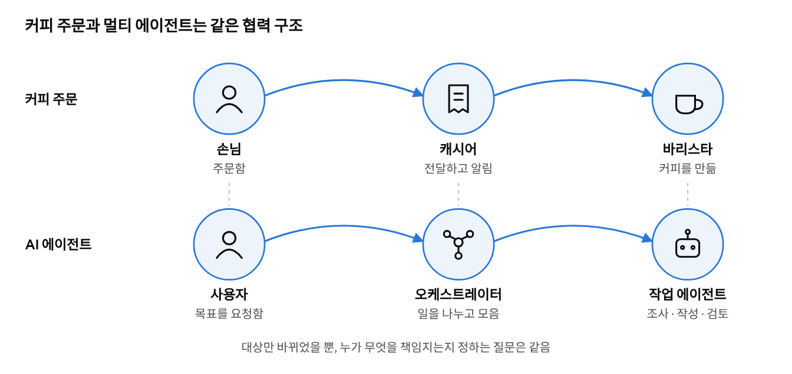
커피 주문의 세 역할과 멀티 에이전트의 세 역할이 같은 구조로 대응함
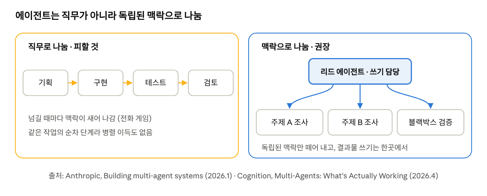
직무 순서로 나누면 넘길 때마다 맥락이 새고, 맥락으로 나누면 각 에이전트가 필요한 정보를 가진 채 일함
코드로 보기
아래 코드는 이해를 돕기 위한 간단한 스케치임. 볼 것은 오케스트레이터가 각 에이전트의 '역할'만 알고 안쪽은 모른다는 점임.
interface Agent { Result handle(Task task); } // ① 역할: 일을 받아 결과를 돌려줌
class Orchestrator { // ② 캐시어 자리
private final List<Agent> researchers; // ③ 주제별 조사 에이전트(병렬)
private final Agent writer; // ④ 쓰기는 한 에이전트만
private final Agent reviewer; // ⑤ 안을 모르는 검토자
Report run(Topic topic) {
List<Result> notes = researchers.parallelStream()
.map(r -> r.handle(Task.research(topic))) // ⑥ 독립된 갈래는 동시에
.toList();
Result draft = writer.handle(Task.write(notes));
return reviewer.handle(Task.review(draft)).asReport();
}
}
①의 Agent는 역할임. 어떤 모델이나 지시문으로 만들었든 이 역할을 지키면 바꿔 끼울 수 있음.
②의 오케스트레이터는 일을 나눠 주고 결과를 모음. 커피 주문의 캐시어와 같은 자리임.
③의 조사 에이전트들은 주제별로 나뉘어 서로 독립적이므로, ⑥에서 동시에 처리함.
④에서 글쓰기는 한 에이전트만 맡음. 여러 에이전트가 같은 글을 동시에 고치지 않게 하려는 것임.
⑤의 검토자는 작성 과정을 모르고 결과만 봄. 블랙박스 검증자이자 캡슐화의 모습임.
Q. 기획 에이전트, 구현 에이전트, 테스트 에이전트, 검토 에이전트로 나누는 구조는 왜 실패하기 쉬울까?
답 보기
같은 작업을 순서대로 잘라 넘기는 구조라서, 넘길 때마다 맥락이 새고 각 에이전트가 필요한 정보를 다 갖지 못하기 때문임.
구현 에이전트가 만든 코드를 테스트 에이전트가 받으면, 테스트 에이전트는 구현하면서 내린 결정과 그 이유를 모름. 요약해서 넘겨도 무언가는 빠짐. 이것이 '전화 게임'임. 1장으로 말하면, 테스트라는 책임에 필요한 정보를 가진 쪽(구현 에이전트)이 아닌 곳에 책임을 둔 것이고, 정보 전문가 원칙에 어긋남.
또 단계마다 받은 것을 다음으로 넘기기만 하는 에이전트가 생기기 쉬움. 1.3.1의 미들맨임. 그래서 '기능을 맡은 에이전트가 그 테스트도 맡는다'처럼 맥락 단위로 나누고, 검토만 맥락을 모르는 독립된 검증자로 두는 것이 권장됨.
지금의 객체지향: 네 가지 논쟁
④ 역할과 책임을 모듈 단위로: 멀티모듈
무엇이 쟁점인가
1장이 객체 단위로 책임을 나눴다면, 실무에서는 그보다 큰 '코드 묶음' 단위로도 책임을 나눔. 그것이 멀티모듈(multi-module)임. 모듈을 어떤 기준으로 나눌지, 기술 계층으로 나눌지 업무 영역으로 나눌지가 쟁점임.
쉽게 풀면
회사 조직을 떠올리면 됨. 한 방식은 기능별로 나누는 것임. 디자인팀, 개발팀, 마케팅팀이 따로 있고, 새 제품 하나를 내려면 세 팀이 모두 움직여야 함. 다른 방식은 제품별로 나누는 것임. 제품 A팀 안에 디자이너, 개발자, 마케터가 함께 있고, 제품 A에 관한 일은 그 팀 안에서 끝남.
모듈도 같음. 기술 계층으로 자르면 기능 하나를 고칠 때 여러 모듈을 건드리고, 업무 영역으로 자르면 한 모듈 안에서 끝남.
알아 둘 개념과 이론
모듈은 따로 빌드할 수 있는 코드 묶음이고, 멀티모듈은 하나의 프로젝트를 여러 모듈로 나누어 관리하는 구조임. 주로 Gradle이나 Maven을 쓰는 Java, Kotlin(Spring) 프로젝트에서 많이 씀.
나누는 이유는 네 가지임. 결제 API를 바꿔도 외부 연결 모듈만 고치면 되도록 변경 범위를 제한하고, API 서버와 배치 서버가 같은 도메인 코드를 함께 쓰도록 재사용하며, 도메인이 데이터베이스나 웹 기술을 가져다 쓰면 컴파일 단계에서 막히도록 의존 방향을 강제하고, 필요한 모듈만 빌드하고 배포하도록 빌드와 배포를 분리함.
나누는 기준은 크게 둘임. 계층별(layer)은 웹 요청 처리(api), 업무 규칙(domain), 저장(infra)처럼 기술적 역할로 가로로 자름. 도메인별(domain)은 주문(order), 회원(member), 상품(product)처럼 업무 영역으로 세로로 자르고, 각 모듈 안에 그 업무의 요청 처리, 규칙, 저장이 함께 들어감.
계층별은 구조가 단순하고 시작하기 쉽지만, '주문 취소' 기능을 고치려면 세 모듈을 모두 건드려야 하고 규모가 커지면 한 계층 모듈이 비대해짐. 도메인별은 업무 변경이 한 모듈에 모이고 팀별로 나눠 맡기 쉽지만, 경계를 잘못 잡으면 모듈끼리 깊게 얽힘. 작은 서비스나 초기에는 계층별이, 업무 영역과 팀이 많거나 나중에 마이크로서비스(MicroServices Architecture, MSA)로 나눌 계획이 있으면 도메인별이 어울림. 실무에서는 먼저 도메인별로 나누고 각 도메인 안을 다시 계층으로 나누는 식으로 섞기도 함.
1장과의 연결
멀티모듈은 1장의 개념을 객체보다 큰 단위에 그대로 적용한 것임. 모듈마다 맡은 책임이 있고(domain은 규칙, infra는 외부 연결), 다른 모듈은 공개된 인터페이스로만 씀(메시지로만 소통). 모듈 안의 구현은 밖에서 보이지 않고(캡슐화), 다른 모듈을 몰라도 혼자 빌드하고 테스트할 수 있음(자율성).
도메인별 분할은 '함께 바뀌는 책임끼리 한곳에 모은다'는 생각에 더 가까움. 1장에서 협력에 필요한 책임을 한 역할에 묶는 것과 같은 방향임. 그리고 모듈을 너무 잘게 쪼개면 모듈 사이의 협력 비용이 커지는데, 이는 1.3의 '협력과 자율의 균형'과 같은 이야기임.
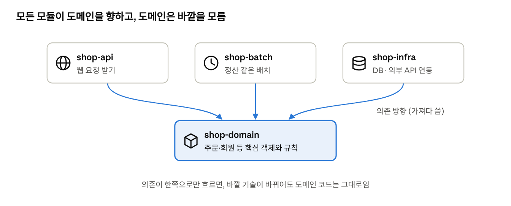
api와 batch는 domain과 infra를 가져다 쓰고, domain은 아무것도 가져오지 않음
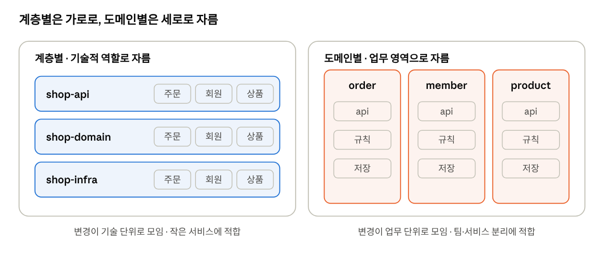
계층별은 기술로 가로로 자르고, 도메인별은 업무로 세로로 자름
코드로 보기
아래 Gradle 설정에서 볼 것은 어느 모듈이 어느 모듈을 가져다 쓰는지, 즉 의존의 방향임.
// settings.gradle: 프로젝트에 어떤 모듈이 있는지 선언
include 'shop-domain', 'shop-infra', 'shop-api', 'shop-batch' // ① 모듈 네 개
// shop-api/build.gradle: api 모듈이 가져다 쓰는 모듈
dependencies {
implementation project(':shop-domain') // ② 규칙을 씀
implementation project(':shop-infra') // ③ 저장과 외부 연결을 씀
}
// shop-domain/build.gradle: 도메인은 다른 모듈을 가져오지 않음
dependencies { } // ④ 비어 있음
①에서 쇼핑몰 프로젝트를 네 모듈로 나눔.
②와 ③에서 api 모듈은 도메인과 인프라를 가져다 씀.
④에서 도메인 모듈은 아무것도 가져오지 않음. 그래서 도메인 코드에서 데이터베이스 라이브러리를 쓰려고 하면 컴파일이 되지 않음. 업무 규칙이 기술에 끌려가지 않도록 의존 방향을 강제한 것임.
스터디 메모 멀티모듈을 설명해 준 분의 내용과 팀 사례를 여기에 덧붙일 예정임.
Q. 작은 사이드 프로젝트에도 멀티모듈을 도입해야 할까?
답 보기
대개는 필요 없음. 하나의 모듈 안에서 패키지로 나누는 것으로 충분하고, 나눌 이유가 생겼을 때 모듈로 분리하는 것이 좋음.
멀티모듈은 변경 범위 제한, 재사용, 의존 방향 강제라는 이점이 있지만, 빌드 설정이 복잡해지고 모듈 사이의 인터페이스를 관리하는 비용이 듦. API 서버 하나뿐이고 배치 서버나 다른 앱이 같은 코드를 쓸 일이 없다면, 이점보다 비용이 큼.
대신 처음부터 패키지를 order, member처럼 업무 영역으로 나누고, 도메인 패키지가 데이터베이스 코드를 직접 부르지 않도록 지켜 두면, 나중에 모듈로 떼어 내기가 쉬움. 2장 논쟁 ⑤의 실용주의, 그리고 위 논쟁 ③의 '단일 에이전트에서 시작하라'와 같은 결론임.
참고
Anthropic, "Building multi-agent systems: When and how to use them" (2026.1, Anthropic 공식 블로그) — 논쟁 ③
마지막으로 경계를 확인함. 캐시어는 메뉴와 결제 방법을 알아야 하지만 제조법은 몰라도 됨. 바리스타는 제조법을 알아야 하지만 손님이 누구인지는 몰라도 됨. 만약 캐시어 카드에 '원두를 간다'가 들어갔다면 캐시어가 바리스타의 안쪽 사정을 아는 것이므로 책임을 다시 나눠야 함. 이 결과를 코드로 옮기면 1.1.1 보충의 Cashier, Barista 인터페이스가 됨.